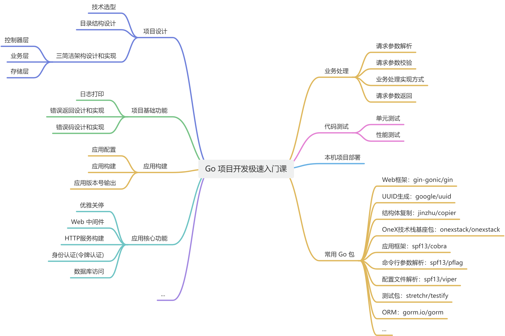
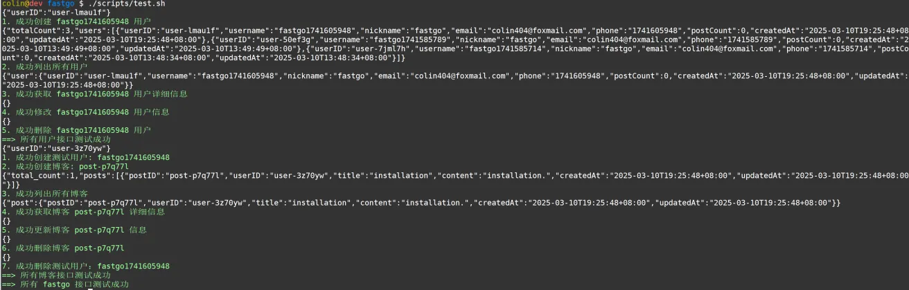
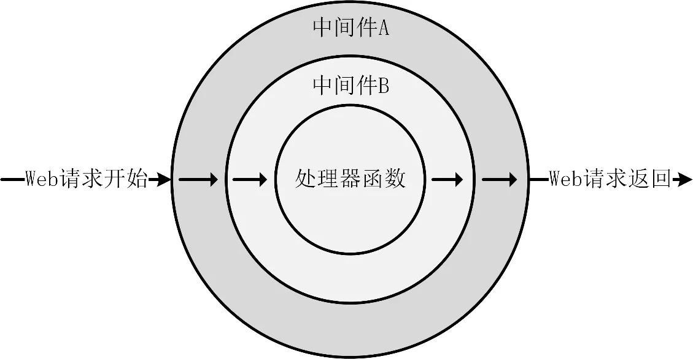

Go 项目开发极速入门 fastgo
课程目标
本课程的目标如下：以最小的学习难度，让初学者快速了解如何开发一个功能相对完备的高质量 Go 项目。
如果你想进阶学习 Go 项目开发技术，可以学习本课程的进阶课程：
- Go 项目开发理论课（22 节）：Go 项目开发方法论课 可以让你掌握开发一个优秀 Go 项目的方法；
- 中级工程师进阶课（40 节课）：Go 项目开发中级实战课。本套课程的进阶课程，包含了更多的技术点，例如：gRPC、gRPC-Gateway、授权、性能测试、性能分析、静态代码检查、Makefile、OpenAPI、自定义日质包、自定义错误包，更强大的校验机制等。可以，让你全方位的掌握如何开发一个优秀的 Go 项目。本套课程包含了一个拥有 16w 行代码的高质量 Go 项目：miniblog；
- 专家级工程师进阶课（100 节课）：Go 项目开发专家级实战课。专家级实战课可以直接让你进阶为 Go 开发专家。本套课程包含了一个拥有 20w 行代码的高质量 Go 项目：onex。
上述 3 门课程会使你直接进阶为 Go 项目开发专家。另外，本课程（4.5 万字）是 Go 项目开发中级实战课（22 万字） 的精简版，学完之后，你可以无缝切入 Go 项目开发中级实战课 课程的学习。上述课程均采用了相同的开发风格、开发规范及软件架构等。并且有配套的项目开发脚手架：osbuilder。
课程包含的功能点
本课程是一个实战类的课程，旨在让你花尽可能短的时间，一步一步，毫无门槛的构建出一个 HTTP Web 服务器。通过本课程的学习，你将学到如下知识点：

快速部署 fastgo 项目
在学习一个开源项目时，建议先将项目部署成功。这样学习过程中可以直接魔改测试。本节课，来教你快速部署 fastgo 项目。
部署环境
本项目的部署环境要求如下：
- Go版本： >= 1.24.0；
- 操作系统： 建议使用 Linux 操作系统。本课程的部署环境为 Debian 12。如有条件，建议直接使用 Debian 12 系统，这样可以避免因操作系统差异带来的安装问题。若非 Debian 12 系统，出现部署问题，需要你自己根据错误日志，解决问题。
部署 fastgo 项目分为以下 3 步：
- Go 编译环境安装和配置；
- 安装和配置 MariaDB 数据库；
- 初始化
fastgo数据库； - 安装和配置 fastgo 项目。
步骤 1：Go 编译环境安装和配置
提示：如果你已经安装了 Go 编译环境，可跳过这一步。
安装 Go 编译环境的步骤相对简单，只需下载源码包并配置相应的环境变量。具体步骤如下。
1、下载安装包。
你可以从 Go 语言官方网站下载对应的 Go 安装包和源码包。以下命令将下载 go1.24.0 安装包：
$ wget -P /tmp/ https://go.dev/dl/go1.24.0.linux-amd64.tar.gz
2、解压并安装。
请执行以下命令解压并安装 Go 编译工具及源码：
$ mkdir -p $HOME/go
$ tar -xvzf /tmp/go1.24.0.linux-amd64.tar.gz -C $HOME/go
$ mv $HOME/go/go $HOME/go/go1.24.0
tar 命令解析：
-
tar: 是用于打包和解包文件的工具； -
-xvzf: 是 tar 命令的选项，含义如下：x: 表示解压缩文件；v: 表示显示详细的解压缩过程；z: 表示使用gzip解压缩；f: 表示后面跟着要解压的文件名。
-
go1.24.0.linux-amd64.tar.gz: 是待解压缩的压缩文件名。 -
-C $HOME/go: 表示解压缩后的文件要放到指定目录$HOME/go目录中。
3、配置 $HOME/.bashrc 文件。
请按照以下命令将 Go 的相关环境变量追加到 $HOME/.bashrc 文件中。
$ tee -a $HOME/.bashrc <<'EOF'
# Go envs
export GOVERSION=${GOVERSION-go1.24.0} # Go 版本设置
export GO_INSTALL_DIR=$HOME/go # Go 安装目录
export GOROOT=$GO_INSTALL_DIR/$GOVERSION # GOROOT 设置
export GOPATH=$HOME/golang # GOPATH 设置
export PATH=$GOROOT/bin:$GOPATH/bin:$PATH # 添加 PATH 路径
export GOPROXY=https://goproxy.cn,direct # 安装 Go 模块时，代理服务器设置
export GOPRIVATE=
export GOSUMDB=off # 关闭校验 Go 依赖包的哈希值
EOF
4、测试是否安装成功。
如果执行 go version 命令后可以成功输出 Go 的版本信息，则说明 Go 编译环境已成功安装。具体命令如下：
$ bash # 配置 $HOME/.bashrc 后，需要执行 bash 命令将配置加载到当前 Shell
$ go version
go version go1.24.0 linux/amd64
步骤 2： 安装和配置 MariaDB 数据库
提示：如果你已经安装和配置 MariaDB 数据库，可跳过这一步。
本课程在 master 分支下提供了一个名为 configs/fg-apiserver.yaml 的文件，其中保存了数据库初始化的 SQL 语句。
在生产环境中，fastgo 项目需要使用 MariaDB 数据库来存储数据，因此需要先安装 MariaDB 数据库。安装和配置 MariaDB 的具体步骤如下。
1、安装 MariaDB 服务端和 MariaDB 客户端
安装命令如下：
$ sudo apt install -y mariadb-server mariadb-client
2、启动 MariaDB，并设置开机启动
启动命令如下：
$ sudo systemctl enable mariadb
$ sudo systemctl start mariadb
$ sudo systemctl status mariadb
3、设置 root 初始密码
初始化命令如下：
$ sudo mysqladmin -uroot password 'keti@1234'
提示： 执行 mysqladmin 命令时，必须具有 root 权限，否则可能会出现错误：mysqladmin: connect to server at 'localhost' failed。
步骤 3：初始化 fastgo 数据库
如果你使用之前安装的 MySQL 数据库，而非本课程安装的 MySQL。那么课程中访问数据库的地址、用户名和密码，需要你自行适配。
1、登录数据库并创建 fastgo 用户
创建命令如下：
$ mysql -h127.0.0.1 -P3306 -uroot -p'keti@1234'
Welcome to the MariaDB monitor. Commands end with ; or \g.
Your MariaDB connection id is 34
Server version: 10.11.11-MariaDB-0+deb12u1 Debian 12
Copyright (c) 2000, 2018, Oracle, MariaDB Corporation Ab and others.
Type 'help;' or '\h' for help. Type '\c' to clear the current input statement.
MariaDB [(none)]> grant all on fastgo.* TO fastgo@127.0.0.1 identified by 'fastgo1234';
Query OK, 0 rows affected (0.003 sec)
MariaDB [(none)]> flush privileges;
Query OK, 0 rows affected (0.001 sec)
MariaDB [(none)]> exit;
Bye
2、创建 fastgo 数据库
使用 fastgo 用户登录 MariaDB，并创建 fastgo 数据库，创建命令如下：
$ mkdir -p $HOME/golang/src/github.com/onexstack/
$ cd $HOME/golang/src/github.com/onexstack/
$ git clone https://github.com/onexstack/fastgo
$ cd $HOME/golang/src/github.com/onexstack/fastgo
$ mysql -h127.0.0.1 -P3306 -u fastgo -p'fastgo1234'
> source configs/fastgo.sql;
> use fastgo;
Database changed
> show tables;
+--------------------+
| Tables_in_fastgo |
+--------------------+
| post |
| user |
+--------------------+
3 rows in set (0.000 sec)
> exit;
步骤 4： 安装和配置 fastgo 项目
安装和配置 fastgo 项目步骤如下。
1、在配置文件中添加数据库配置
fastgo 项目启动需要连接数据库，所以需要在配置文件 configs/fg-apiserver.yaml 中配置数据库的 IP、端口、用户名、密码和数据库名信息。configs/fg-apiserver.yaml 配置文件内容如下：
# 通用配置
#
# JWT 签发密钥
jwt-key: Rtg8BPKNEf2mB4mgvKONGPZZQSaJWNLijxR42qRgq0iBb5
# JWT Token 过期时间
expiration: 1000h
# MySQL 数据库相关配置
mysql:
# MySQL 机器 IP 和端口，默认 127.0.0.1:3306
addr: 127.0.0.1:3306
# MySQL 用户名(建议授权最小权限集)
username: fastgo
# MySQL 用户密码
password: fastgo1234
# fastgo 系统所用的数据库名
database: fastgo
# MySQL 最大空闲连接数，默认 100
max-idle-connections: 100
# MySQL 最大打开的连接数，默认 100
max-open-connections: 100
# 空闲连接最大存活时间，默认 10s
max-connection-life-time: 10s
log:
format: text
level: info
output: stdout
提示：如果你使用之前创建的数据库，则需要适配
mysql.addr、mysql.username、mysql.password配置项。
2、启动 fg-apiserver 组件
执行以下命令编译并启动 fg-apiserver 组件：
$ cd $HOME/golang/src/github.com/onexstack/fastgo
$ ./build.sh
$ _output/fg-apiserver -c configs/fg-apiserver.yaml
...
time=2025-03-10T19:24:23.440+08:00 level=INFO msg="Start to listening the incoming requests on http address" addr=0.0.0.0:6666
启动的 API 服务器监听地址为：0.0.0.0:6666。
3、测试 fg-apiserver 组件功能是否正常
打开一个新的 Linux 终端，执行以下命令测试 fg-apiserver 中的 API 接口是否正常工作：
$ ./scripts/test.sh

可以看到，fg-apiserver 中的接口，都测试通过。
fastgo 项目规范及目录结构介绍
目录结构规范
项目开发的第一步便是制定一个合理的目录结构。因为目录结构直接影响着项目的可维护性。
当前社区并没有官方的 Go 项目目录规范。社区中也有不同的目录结构设计方案，当前接受度最高的方案是 golang-standards/project-layout，中文文档为：Go项目标准布局。
很多大型的开源项目都采用了 project-layout 项目所建议的目录规范。
fastgo 项目目录结构介绍
fastgo 项目采用了 project-layout 目录规范。fastgo 目录结构及说明如下：
├── build.sh* # 构建脚本，用于编译 fg-apiserver 源码
├── cmd/ # 放置可独立运行的可执行程序入口
│ └── fg-apiserver/ # fg-apiserver 服务的主入口目录
│ ├── app/ # 存放与该服务启动配置和初始化相关的代码
│ │ ├── config.go # 读取和管理配置信息的核心逻辑
│ │ ├── options/ # 定义命令行或其他参数选项
│ │ │ └── options.go # 具体的选项结构体及参数解析逻辑
│ │ └── server.go # 启动并运行服务器的核心逻辑
│ └── main.go # 程序入口点，加载配置、启动服务等核心流程
├── configs/ # 配置文件及数据库脚本
│ ├── fastgo.sql # 数据库初始化脚本
│ └── fg-apiserver.yaml # fg-apiserver 服务配置文件
├── docs/ # 项目文档、说明文件或接口文档等
├── go.mod # Go 模块管理文件，记录依赖模块与版本
├── go.sum # 存放 go.mod 中依赖的精确版本哈希
├── go.work # Go 工作区文件，用于管理多个模块
├── go.work.sum # go.work 的依赖校验文件
├── internal/ # 不希望被外部引用的包，存放主要业务逻辑
│ ├── apiserver/ # API 服务器的核心实现
│ │ ├── biz/ # 业务层相关逻辑
│ │ │ ├── biz.go # 核心业务逻辑入口
│ │ │ ├── doc.go # 业务层相关文档注释
│ │ │ ├── README.md # 业务层的说明文档
│ │ │ ├── v1/ # v1 版本的业务实现
│ │ │ │ ├── post/ # 博客相关业务
│ │ │ │ │ └── post.go # 博客业务相关逻辑
│ │ │ │ └── user/ # 用户相关业务
│ │ │ │ └── user.go # 用户业务相关逻辑
│ │ │ └── v2/ # 新版本（v2）业务逻辑（示例或预留）
│ │ ├── handler/ # HTTP 处理层，用于接收、返回数据
│ │ │ ├── handler.go # 通用处理逻辑或公共处理方法
│ │ │ ├── post.go # 博客相关接口的 HTTP 处理函数
│ │ │ └── user.go # 用户相关接口的 HTTP 处理函数
│ │ ├── model/ # 数据模型定义与自动生成的代码
│ │ │ ├── hook.go # 模型钩子函数，如果使用了 GORM hook
│ │ │ ├── post.gen.go # 博客模型的自动生成代码
│ │ │ └── user.gen.go # 用户模型的自动生成代码
│ │ ├── pkg/ # 存放与当前 apiserver 业务紧密相关的通用函数或包
│ │ │ ├── conversion/ # 数据转换，用于结构体之间的转换逻辑
│ │ │ │ ├── post.go # 文章数据转换逻辑
│ │ │ │ └── user.go # 用户数据转换逻辑
│ │ │ └── validation/ # 数据校验相关
│ │ │ ├── post.go # 文章校验逻辑
│ │ │ ├── user.go # 用户校验逻辑
│ │ │ └── validation.go # 通用校验工具和方法
│ │ ├── server.go # 整个 apiserver 的核心启动逻辑
│ │ ├── server.go~ # 临时文件或备份文件
│ │ └── store/ # 数据存储层接口与实现
│ │ ├── doc.go # 存储层文档注释
│ │ ├── logger.go # 存储相关日志逻辑
│ │ ├── post.go # 文章存储操作
│ │ ├── README.md # 存储层的说明文档
│ │ ├── store.go # 存储层接口定义或核心实现
│ │ └── user.go # 用户存储操作
│ └── pkg/ # 内部公共包，通用功能组件
│ ├── contextx/ # 扩展和封装与上下文相关的功能
│ │ ├── contextx.go # 上下文工具函数
│ │ └── doc.go # 文档注释
│ ├── core/ # 核心方法或基础工具
│ │ └── core.go # 核心功能实现
│ ├── errorsx/ # 错误处理扩展
│ │ ├── code.go # 错误码定义
│ │ ├── errorsx.go # 自定义错误类型和逻辑
│ │ ├── post.go # 文章相关错误定义
│ │ └── user.go # 用户相关错误定义
│ ├── known/ # 存放常量或可复用的“已知”配置
│ │ └── known.go # 常量定义
│ ├── middleware/ # HTTP 中间件
│ │ ├── authn.go # 认证相关中间件
│ │ ├── header.go # 处理头部信息的中间件
│ │ └── requestid.go # 处理请求 ID 的中间件
│ └── rid/ # Request ID 生成和管理
│ ├── doc.go # 文档注释
│ ├── rid.go # Request ID 的生成逻辑
│ ├── rid_test.go # 测试文件
│ └── salt.go # 生成 Request ID 时的盐值相关逻辑
├── _output/
│ └── fg-apiserver* # 编译输出的可执行文件
├── pkg/ # 可被对外使用的公共包
│ ├── api/ # API 定义与结构体
│ │ └── apiserver/
│ │ └── v1/
│ │ ├── post.go # v1 版文章相关 API 定义
│ │ └── user.go # v1 版用户相关 API 定义
│ ├── auth/ # 鉴权相关逻辑
│ │ └── authn.go # 登录验证或 Token 验证逻辑
│ ├── options/ # 项目通用选项配置
│ │ └── mysql_options.go # MySQL 连接相关配置
│ ├── token/ # Token 生成、解析等
│ │ ├── doc.go # 文档注释
│ │ ├── token.go # Token 相关主逻辑
│ │ └── token_test.go # 测试文件
│ ├── token~/ # 临时或备份目录
│ │ └── token.go # 备份的 Token 逻辑文件
│ └── version/ # 版本信息
│ ├── doc.go # 文档注释
│ ├── flag.go # 版本标识相关的命令行标识
│ └── version.go # 版本信息相关逻辑
├── README.md # 项目说明文档
└── scripts/
└── test.sh* # 测试命令脚本或自动化测试入口
初始化 fastgo 项目仓库
项目开发的第一步便是初始化一个项目目录，并根据 golang-standards/project-layout 目录规范，添加必要的目录及文件。
本节课，来给你介绍下如何初始化一个 Go 项目。
初始化一个 Go 项目，大概分为以下几步：
- 创建项目目录；
- 初始化目录为 Go 模块；
- 初始化目录为 Git 仓库；
- 创建需要的目录；
- 创建 Hello World 程序。
步骤 1：创建项目目录
开发 Go 项目的第 1 步便是创建一个项目目录。现今 Go 模块管理都是用的 Go Modules。虽然，在使用 Go Modules 的情况下，不再需要设置 GOPATH 环境变量。但是为了提高项目的维护性，这里还是建议将项目放在 GOPATH目录下。
初始化项目目录，操作命令如下：
$ mkdir -p $GOPATH/src/github.com/ketitongxue/fastgo # 创建项目目录
$ cd $GOPATH/src/github.com/ketitongxue/fastgo # 进入到项目目录中
$ echo "## fastgo 项目" >> README.md # 创建一个 README 文件，作为项目的第一个文件
步骤 2： 初始化目录为 Go 模块
Go 项目都需要将目录初始化为一个 Go 模块。所以，这里我们需要将 fastgo 目录初始化为一个 Go 模块。初始化命令如下：
$ go mod init # 1. 初始化 Go 模块
$ go work init . # 2. 初始化 Go 工作区（仅限多模块管理场景），生成 go.work 文件
$ go work use . # 添加当前模块到 Go 工作区
步骤 3： 初始化目录为 Git 仓库
当前 Go 项目基本都是使用 Git 来管理项目源码的。所以，我们接下来还需要将目录初始化为一个 Git 仓库。
初始化为 Git 仓库的第一步，就是在当前目录添加一个 .gitignore 文件，里面包含不期望 Git 跟踪的文件，例如：临时文件等。你可以使用生成工具 gitignore.io 来生成 .gitignore：
# 备份文件
*.bak
*~
# Go 工作区文件。Go 项目开发中，不建议将 Go 工作区文件提交到代码仓库
go.work
go.work.sum
# 日志文件
*.log
# 自定义文件
/_output
可以执行以下命令将 Go 项目仓库初始化为一个 Git 仓库：
$ git init # 初始化当前目录为 Git 仓库
$ git config user.name JuZX # 设置仓库级别用户名
$ git config user.email wo_sakura@163.com # 设置仓库级别邮箱
$ git config --global credential.helper store # 永久保存凭据
$ git add . # 添加所有被 Git 追踪的文件到暂存区
$ git remote add origin https://github.com/ketitongxue/fastgo # 将本地仓库与远程仓库相关联
$ git commit -m "feat: 第一次提交" # 将暂存区内容添加到本地仓库中
之后，我们就可以在该目录下开发代码，并根据需要提交代码。提交后的源码目录内容如下：
$ ls -A
.git .gitignore go.mod go.work README.md
步骤 4： 创建需要的目录
执行以下命令预创建需要的目录：
$ mkdir -p cmd configs docs scripts
$ ls -F
cmd/ configs/ docs/ go.mod go.work README.md scripts/
提前创建一些符合目录规范的空目录可以起到一下 2 个作用：
- 提前规划目录相当于提前规划未来的功能，将未来要实现的功能以目录的形式固化在项目仓库中，起到记录的作用；
- 提前创建目录有利于后续文件按照功能存放在预先规划好的目录中，从而使项目更加规范。否则，不同开发者可能会根据各自的开发习惯，创建各种各样的目录结构和目录名称。
因为 Git 默认不会追踪空目录，所以需要再空目录下创建 .keep 文件，创建命令如下：
$ touch configs/.keep docs/.keep scripts/.keep cmd/.keep
步骤 5： 创建 Hello World 程序
创建 cmd/fg-apiserver/ 目录（fg 是 fastgo 的简写）：
$ mkdir -p cmd/fg-apiserver
$ touch cmd/fg-apiserver/main.go
新建 cmd/fg-apiserver/main.go，内容如下：
package main
import "fmt"
// Go 程序的默认入口函数。阅读项目代码的入口函数.
func main() {
fmt.Println("Hello World!")
}
编译并运行，命令如下：
$ gofmt -s -w ./ # 格式化 Go 源码
$ go build -o _output/fg-apiserver -v cmd/fg-apiserver/main.go # 编译 fg-apiserver 组件源码
$ ls _output/ # _output 为二进制文件保存目录
fg-apiserver
$ _output/fg-apiserver # 启动 fg-apiserver 组件
Hello World!
使用 Cobra 包构建 Go 项目
Go 程序的运行入口是 main 函数，所以我们首先要开发出 main 函数。
可以使用以下 2 种方式来开发一个 main 函数：
- 手动写一个 main 函数，实现业务逻辑，并启动程序；
- 使用应用框架，实现一个 main 函数。
手动写一个 main 函数，实现业务逻辑，并启动程序。
手动写一个 main 函数，实现业务逻辑示例代码如下：
package main
import (
"flag"
"fmt"
)
func main() {
// 解析命令行参数
option1 := flag.String("option1", "default_value", "Description of option 1")
option2 := flag.Int("option2", 0, "Description of option 2")
flag.Parse()
// 执行简单的业务逻辑
fmt.Println("Option 1 value:", *option1)
fmt.Println("Option 2 value:", *option2)
// 在这里添加您的业务逻辑代码
}
这种 main 不能实现很复杂的功能，当应用程序逻辑复杂的时候，main 函数代码会很难维护。所以，建议使用社区优秀的应用包来实现一个程序，这种程序更加结构化，更易维护。
使用应用框架实现 main 函数
社区有很多优秀的 Go 包，例如 spf13/cobra、urfave/cli 等。但当前用的最多的是 cobra。例如：Kubernetes、Docker、Etcd、Hugo 等，均使用 cobra 构建应用。fastgo 项目也是用 cobra 来构建应用。
一个 Go 项目通常代表一个应用，一个应用通常又包含多个服务（或者组件）。根据 project-layout 目录结构规范，目录的组织方式如下：
$ tree -F app-a
app-a
├── cmd/
│ ├── component-a/
│ └── component-b/
└── internal/
├── component-a/
└── component-b/
在 cmd/ 目录下创建多个目录，例如：component-a、component-b。每个目录下保存了对应服务的 main 源码。cmd/ 目录下的源文件保存了服务二进制文件的启动源码，具体的业务逻辑实现则放在 internal 目录下，并且放在对应的同名目录下。
这种目录组织方式的优点如下：
- 在 cmd/目录下保存不同服务的 main 源码，将一个应用的不同服务 main 函数保存在一个 cmd/目录下，便于查找和维护这些服务源码；
- 将不同服务的业务实现放在 internal 目录下的不同文件中，有利于从目录来物理隔离不同服务的源码，从而提高代码的可维护性。
因为 fastgo 实现了一个 REST API 服务器。所以其服务组件命名为 fg-apiserver。其中 fg 是 fastgo 的简写，用来表示这是一个 fastgo 项目的服务。apiserver 用来明确指代这是一个 REST API 服务器。
根据上面介绍的源码组织方式，需要在 cmd/ 目录下创建 fg-apiserver 目录，fg-apiserver 目录中创建 main.go 文件，用来保存 fg-apiserver 服务的 main 函数入口。代码如下（位于 cmd/fg-apiserver/main.go 文件中）：
package main
import (
"os"
"github.com/ketitongxue/fastgo/cmd/fg-apiserver/app"
// 导入 automaxprocs 包，可以在程序启动时自动设置 GOMAXPROCS 配置，
// 使其与 Linux 容器的 CPU 配额相匹配。
// 这避免了在容器中运行时，因默认 GOMAXPROCS 值不合适导致的性能问题，
// 确保 Go 程序能够充分利用可用的 CPU 资源，避免 CPU 浪费。
_ "go.uber.org/automaxprocs"
)
// Go 程序的默认入口函数。阅读项目代码的入口函数.
func main() {
// 创建 Go 极速项目
command := app.NewFastGOCommand()
// 执行命令并处理错误
if err := command.Execute(); err != nil {
// 如果发生错误，则退出程序
// 返回退出码，可以使其他程序（例如 bash 脚本）根据退出码来判断服务运行状态
os.Exit(1)
}
}
cmd/fg-apiserver/main.go 文件中通过 app.NewFastGOCommand() 创建了一个 *cobra.Command 类型的命令实例。
之所以在 cmd/fg-apiserver/app 目录下创建 *cobra.Command 类型的实例，而不是在 cmd/fg-apiserver/main.go 文件中创建，是为了保持 cmd/fg-apiserver 目录下源码的简洁性，确保 main 函数代码简洁、易读。
因为将创建命令实例的核心逻辑都保存在了 cmd/fg-apiserver/app 目录中，意味着 cmd/fg-apiserver/main.go 文件没有其他依赖，所以可以通过以下方式来安装服务：
$ go install github.com/onexstack/fastgo/cmd/fg-apiserver@latest
cmd/fg-apiserver/app/server.go 文件内容如下：
package app
import (
"fmt"
"github.com/spf13/cobra"
)
// NewFastGOCommand 创建一个 *cobra.Command 对象，用于启动应用程序.
func NewFastGOCommand() *cobra.Command {
cmd := &cobra.Command{
// 指定命令的名字，该名字会出现在帮助信息中
Use: "fg-apiserver",
// 命令的简短描述
Short: "A very lightweight full go project",
Long: `A very lightweight full go project, designed to help beginners quickly
learn Go project development.`,
// 命令出错时，不打印帮助信息。设置为 true 可以确保命令出错时一眼就能看到错误信息
SilenceUsage: true,
// 指定调用 cmd.Execute() 时，执行的 Run 函数
RunE: func(cmd *cobra.Command, args []string) error {
fmt.Println("Hello FastGO!")
return nil
},
// 设置命令运行时的参数检查，不需要指定命令行参数。例如：./fg-apiserver param1 param2
Args: cobra.NoArgs,
}
return cmd
}
创建 cmd实例的方法，其实就是根据 cobra.Command类型的字段描述，设置需要的字段。每个字段的含义，可阅读上述代码，这里不再介绍。
上述代码，核心设计如下：
- **声明式 API 设计：**代码使用 Cobra 的声明式结构定义命令行界面，通过简洁的配置表达复杂的命令行行为，提升了可读性和可维护性。这种方式是Go社区推崇的"配置胜于代码"哲学的体现；
- **错误处理优化：**使用RunE替代Run并配合SilenceUsage: true，创建了更专业的错误报告机制。这种设计在大型CLI工具中至关重要，它确保错误信息清晰可见，不被冗长的帮助文本淹没；
- **安全边界设置：**通过Args: cobra.NoArgs强制执行参数验证，防止用户误传参数导致程序异常。这种防御性编程思想体现了对生产环境稳定性的考虑，是区分业余和专业CLI工具的关键细节；
- **自文档化：**代码中的Short和Long字段不仅提供了用户文档，更重要的是它们构成了自助式用户界面，使命令行工具更加用户友好，这是优秀CLI设计的标志特征。
这种设计模式被 Kubernetes、Docker 等知名项目广泛采用，代表了 Go 生态系统中命令行应用的工程最佳实践。
编译并测试
执行以下命令编译并运行源码：
$ go mod tidy
go: finding module for package github.com/spf13/cobra
go: finding module for package go.uber.org/automaxprocs
go: found go.uber.org/automaxprocs in go.uber.org/automaxprocs v1.6.0
go: found github.com/spf13/cobra in github.com/spf13/cobra v1.9.1
$ go build -v -o _output/fg-apiserver cmd/fg-apiserver/main.go
$ _output/fg-apiserver
2025/03/02 01:56:55 maxprocs: Leaving GOMAXPROCS=32: CPU quota undefined
Hello FastGO!
$ _output/fg-apiserver -h
2025/05/14 21:57:53 maxprocs: Leaving GOMAXPROCS=4: CPU quota undefined
A very lightweight full go project, designed to help beginners quickly
learn Go project development.
Usage:
fg-apiserver [flags]
Flags:
-h, --help help for fg-apiserver
使用 Viper 添加配置文件解析功能
因为配置几乎是每个服务都需要的能力，所以，在使用 cobra 开发完二进制命令的主体框架之后，还需要实现配置文件解析能力。
Go 项目开发中配置解析源有多种，例如：命令行参数、环境变量、配置文件等。但是推荐的配置解析源是配置文件，因为配置文件更易维护。
Go 社区提供了很多优秀的 Go 包可以读取 YAML、JSON 等格式的配置文件，但是目前用的最多的是 spf13/viper 包。
本节课，就来展示下如何使用 spf13/viper 包实现服务的配置文件解析功能。
配置文件解析思路
在 Go 项目开发中，服务的配置能力一般通过以下 2 步来实现：
- 解析配置文件；
- 读取配置。
其中，配置文件考虑到易读性，通常使用格式更加易读的 YAML 格式。并且使用 spf13/viper 包来解析。关于 viper 包的使用可参考：docs/book/viper.md 文档。
解析配置文件
viper 包和 cobra 都是由 spf13 大神开发，所以二者天然具备了很高的集成能力。cobra 包提供了 OnInitialize 函数，该函数可以用来在程序运行时运行指定的钩子函数。
所以，我们可以通过设置钩子函数，来让程序运行时加载并读取配置。更新 cmd/fg-apiserver/app/server.go 文件，更新内容如下：
package app
import (
"encoding/json"
...
"github.com/spf13/viper"
"github.com/ketitongxue/fastgo/cmd/fg-apiserver/app/options"
)
var configFile string // 配置文件路径
// NewFastGOCommand 创建一个 *cobra.Command 对象，用于启动应用程序.
func NewFastGOCommand() *cobra.Command {
// 创建默认的应用命令行选项
opts := options.NewServerOptions()
cmd := &cobra.Command{
...
RunE: func(cmd *cobra.Command, args []string) error {
// 将 viper 中的配置解析到选项 opts 变量中.
if err := viper.Unmarshal(opts); err != nil {
return err
}
// 对命令行选项值进行校验.
if err := opts.Validate(); err != nil {
return err
}
fmt.Printf("Read MySQL host from Viper: %s\n", viper.GetString("mysql.addr"))
jsonData, _ := json.MarshalIndent(opts, "", " ")
fmt.Println(string(jsonData))
return nil
},
// 设置命令运行时的参数检查，不需要指定命令行参数。例如：./fg-apiserver param1 param2
Args: cobra.NoArgs,
}
// 初始化配置函数，在每个命令运行时调用
cobra.OnInitialize(onInitialize)
// cobra 支持持久性标志(PersistentFlag)，该标志可用于它所分配的命令以及该命令下的每个子命令
// 推荐使用配置文件来配置应用，便于管理配置项
cmd.PersistentFlags().StringVarP(&configFile, "config", "c", filePath(), "Path to the fg-apiserver configuration file.")
return cmd
}
上述代码会通过 options.NewServerOptions() 函数调用，创建了一个配置结构体变量 opts。在 RunE 方法中，通过 viper.Unmarshal(opts) 函数调用，将 viper 读取配置文件后的配置内容解码到 opts 配置结构体变量中。
之后，调用 opts 的 Validate 方法，来判断配置项是否合法。并使用以下 2 种方法读取并打印配置项内容：
- 使用 viper.GetString 读取指定的配置项。 viper.Get<Type> 是 viper 提供的方法可以根据传入的 key，来读取配置项的值。key 支持层级，例如：mysql.host，表示 YAML 中的以下配置：
mysql:
host: 127.0.0.1:3306
- 通过配置结构体变量 opts 来使用：opts.MySQLOptions.Username；
- 使用 json.MarshalIndent 读取所有的配置项并打印。
关于 NewServerOptions 函数的实现，后面会详细介绍。
上述代码通过 cobra.OnInitialize(onInitialize) 调用，指定了程序启动时调用的钩子函数 onInitialize，该函数用来加载并读取配置，后面会介绍。
通过以下代码行来给命令行程序添加 --config/-c 命令行选项：
cmd.PersistentFlags().StringVarP(&configFile, "config", "c", filePath(), "Path to the fg-apiserver configuration file.")
--config/-c 选项用来指定配置文件，并将配置文件的路径保存在 configFile 变量中，供 onInitialize 函数加载解析。
onInitialize 钩子函数定义在 cmd/fg-apiserver/app/config.go 文件中，内容如下：
package app
import (
"os"
"path/filepath"
"strings"
"github.com/spf13/cobra"
"github.com/spf13/viper"
)
const (
// defaultHomeDir 定义放置 fastgo 服务配置的默认目录.
defaultHomeDir = ".fastgo"
// defaultConfigName 指定 fastgo 服务的默认配置文件名.
defaultConfigName = "fg-apiserver.yaml"
)
// onInitialize 设置需要读取的配置文件名、环境变量，并将其内容读取到 viper 中.
func onInitialize() {
if configFile != "" {
// 从命令行选项指定的配置文件中读取
viper.SetConfigFile(configFile)
} else {
// 使用默认配置文件路径和名称
for _, dir := range searchDirs() {
// 将 dir 目录加入到配置文件的搜索路径
viper.AddConfigPath(dir)
}
// 设置配置文件格式为 YAML
viper.SetConfigType("yaml")
// 配置文件名称（没有文件扩展名）
viper.SetConfigName(defaultConfigName)
}
// 读取环境变量并设置前缀
setupEnvironmentVariables()
// 读取配置文件.如果指定了配置文件名，则使用指定的配置文件，否则在注册的搜索路径中搜索
_ = viper.ReadInConfig()
}
// setupEnvironmentVariables 配置环境变量规则.
func setupEnvironmentVariables() {
// 允许 viper 自动匹配环境变量
viper.AutomaticEnv()
// 设置环境变量前缀
viper.SetEnvPrefix("FASTGO")
// 替换环境变量 key 中的分隔符 '.' 和 '-' 为 '_'
replacer := strings.NewReplacer(".", "_", "-", "_")
viper.SetEnvKeyReplacer(replacer)
}
// searchDirs 返回默认的配置文件搜索目录.
func searchDirs() []string {
// 获取用户主目录
homeDir, err := os.UserHomeDir()
// 如果获取用户主目录失败，则打印错误信息并退出程序
cobra.CheckErr(err)
return []string{filepath.Join(homeDir, defaultHomeDir), "."}
}
// filePath 获取默认配置文件的完整路径.
func filePath() string {
home, err := os.UserHomeDir()
// 如果不能获取用户主目录，则记录错误并返回空路径
cobra.CheckErr(err)
return filepath.Join(home, defaultHomeDir, defaultConfigName)
}
上述代码，首先判断是否通过命令行选项指定了配置文件路径（通过变量 configFile）。如果配置文件被明确指定，直接让 viper 加载指定文件。否则，进入默认路径的多级搜索逻辑。
默认情况下，代码将从用户主目录下的 .fastgo 目录以及当前工作目录中查找 fg-apiserver.yaml 配置文件，这个默认路径由 searchDirs 函数返回，并通过 viper.AddConfigPath 注册为可搜索路径。
在文件读取方面，viper 被设置为支持 YAML 格式，这通过 SetConfigType 明确指定。此外，配置的名称（即不含扩展名的部分）定义为 fg-apiserver.yaml，默认情况下会在上述搜索目录内查找此文件。
对于环境变量的支持，代码通过 setupEnvironmentVariables 函数完成设置。这一部分的亮点在于对环境变量的智能映射和自动处理。使用了 viper.AutomaticEnv，可以自动将环境变量加载到配置项。此外，设置了前缀 FASTGO，确保所有相关的环境变量都统一在同一命名空间下，减少命名冲突的可能性。通过 strings.NewReplacer，将一些特殊字符（如.和-）替换为_，使环境变量命名更符合规范。例如，配置项 server.host 可以通过环境变量 FASTGO_SERVER_HOST 直接覆盖。
filePath 函数用于生成默认配置文件的完整路径。
为了提高健壮性，所有涉及用户主目录的逻辑都配合了错误检测，使用 cobra.CheckErr 来捕获异常以保证程序在出现关键错误时正常退出。
创建配置文件结构体
上面介绍过，我们可以通过 viper.Get<Type> 来访问配置项的值，也可以通过配置项结构体变量来引用配置项的值，例如 opts.MySQLOptions.Username。
在实际开发中建议通过 opts.MySQLOptions.Username 方式来访问配置项的值，因为这种方式，显式易维护。
配置项结构体定义位于 cmd/fg-apiserver/app/options/options.go 文件中。之所以放在该文件中，是是因为配置项结构体的创建、校验等方法代码量较大，为了提高代码的可维护性，将配置项结构体相关的代码，统一保存在cmd/fg-apiserver/app/options/ 目录中。
cmd/fg-apiserver/app/options/options.go 内容如下：
package options
import (
"fmt"
"net"
"strconv"
"time"
)
// MySQLOptions defines options for mysql database.
type MySQLOptions struct {
Addr string `json:"addr,omitempty" mapstructure:"addr"`
Username string `json:"username,omitempty" mapstructure:"username"`
Password string `json:"-" mapstructure:"password"`
Database string `json:"database" mapstructure:"database"`
MaxIdleConnections int `json:"max-idle-connections,omitempty" mapstructure:"max-idle-connections,omitempty"`
MaxOpenConnections int `json:"max-open-connections,omitempty" mapstructure:"max-open-connections"`
MaxConnectionLifeTime time.Duration `json:"max-connection-life-time,omitempty" mapstructure:"max-connection-life-time"`
}
// NewMySQLOptions create a `zero` value instance.
func NewMySQLOptions() *MySQLOptions {
return &MySQLOptions{
Addr: "127.0.0.1:3306",
Username: "onex",
Password: "onex(#)666",
Database: "onex",
MaxIdleConnections: 100,
MaxOpenConnections: 100,
MaxConnectionLifeTime: time.Duration(10) * time.Second,
}
}
type ServerOptions struct {
MySQLOptions *MySQLOptions `json:"mysql" mapstructure:"mysql"`
}
// NewServerOptions 创建带有默认值的 ServerOptions 实例.
func NewServerOptions() *ServerOptions {
return &ServerOptions{
MySQLOptions: NewMySQLOptions(),
}
}
// Validate 校验 ServerOptions 中的选项是否合法.
// 提示：Validate 方法中的具体校验逻辑可以由 Claude、DeepSeek、GPT 等 LLM 自动生成。
func (o *ServerOptions) Validate() error {
// 验证MySQL地址格式
if o.MySQLOptions.Addr == "" {
return fmt.Errorf("MySQL server address cannot be empty")
}
// 检查地址格式是否为host:port
host, portStr, err := net.SplitHostPort(o.MySQLOptions.Addr)
if err != nil {
return fmt.Errorf("Invalid MySQL address format '%s': %w", o.MySQLOptions.Addr, err)
}
// 验证端口是否为数字
port, err := strconv.Atoi(portStr)
if err != nil || port < 1 || port > 65535 {
return fmt.Errorf("Invalid MySQL port: %s", portStr)
}
// 验证主机名是否为空
if host == "" {
return fmt.Errorf("MySQL hostname cannot be empty")
}
// 验证凭据和数据库名
if o.MySQLOptions.Username == "" {
return fmt.Errorf("MySQL username cannot be empty")
}
if o.MySQLOptions.Password == "" {
return fmt.Errorf("MySQL password cannot be empty")
}
if o.MySQLOptions.Database == "" {
return fmt.Errorf("MySQL database name cannot be empty")
}
// 验证连接池参数
if o.MySQLOptions.MaxIdleConnections <= 0 {
return fmt.Errorf("MySQL max idle connections must be greater than 0")
}
if o.MySQLOptions.MaxOpenConnections <= 0 {
return fmt.Errorf("MySQL max open connections must be greater than 0")
}
if o.MySQLOptions.MaxIdleConnections > o.MySQLOptions.MaxOpenConnections {
return fmt.Errorf("MySQL max idle connections cannot be greater than max open connections")
}
if o.MySQLOptions.MaxConnectionLifeTime <= 0 {
return fmt.Errorf("MySQL max connection lifetime must be greater than 0")
}
return nil
}
上述代码定义 ServerOptions 类型的结构体变量，该结构体变量中保存了 fg-apiserver 服务需要用到的所有配置项，例如：MySQLOptions。这里要注意每个配置项字段都有 mapstructure 标签，该标签非常重要，用来指定结构体字段对应的 YAML 中的同名键，例如：MySQLOptions 结构体变量中的 Addr 字段对应了以下 YAML 键（mysql.addr）：
mysql:
addr: 127.0.0.1:3306
上述代码还提供了 NewServerOptions 函数，该函数可以用来快速创建一个带有默认值的 *ServerOptions 类型的结构体变量。通过 NewServerOptions 函数先创建一个具有默认值的配置变量 opts，再更新 opts 中的字段值，优点有以下几点：
- 可以便捷创建一个带有默认值的结构体变量，变量中的值都是推荐的、可用的值；
- 开发者可以根据需要只更新需要的配置项，其他配置项使用默认值，可以提高配置应用的效率。
*ServerOptions 结构体类型的 Validate 函数用来校验配置项的值是否合法，避免非常配置项带来的程序异常。
Validate 函数中的校验逻辑，没必要自己写，可以借助 Claude 3.7、DeepSeek、GPT 等 LLM 来自动生成。
编译并运行
新建 $HOME/golang/src/github.com/onexstack/fastgo/configs/fg-apiserver.yaml 文件，内容如下：
# MySQL 数据库相关配置
mysql:
# MySQL 机器 IP 和端口，默认 127.0.0.1:3306
addr: 127.0.0.1:3306
# MySQL 用户名(建议授权最小权限集)
username: fastgo
# MySQL 用户密码
password: fastgo1234
# fastgo 系统所用的数据库名
database: fastgo
# MySQL 最大空闲连接数，默认 100
max-idle-connections: 100
# MySQL 最大打开的连接数，默认 100
max-open-connections: 100
# 空闲连接最大存活时间，默认 10s
max-connection-life-time: 10s
执行以下命令，编译并运行程序：
$ go build -v -o _output/fg-apiserver cmd/fg-apiserver/main.go
$ _output/fg-apiserver -c configs/fg-apiserver.yaml
2025/05/14 23:05:04 maxprocs: Leaving GOMAXPROCS=4: CPU quota undefined
Read MySQL host from Viper:
{
"config": {
"configfrom": "configs/fg-apiserver.yaml"
},
"mysql": {
"addr": "127.0.0.1:3306",
"username": "fastgo",
"database": "fastgo",
"max-idle-connections": 100,
"max-open-connections": 100,
"max-connection-life-time": 10000000000
}
}
通过上述命令的输出，可知 fg-apiserver 组件成功解析并读取了配置文件中的配置。
框架代码和业务代码分离
代码的动静分离
在 Go 项目开发中，项目的代码，通常分为 2 大类：
- **应用启动框架：**例如：命令行框架、配置文件解析和读取、配置项校验等；
- **业务相关的代码：**业务相关的代码变更相较于应用框架部分，变更频繁，而且更可能会影响业务。
为了提高整个项目的可维护性，可以将上述 2 类代码进行分类拆分，从目录级别进行隔离，减少 2 类代码变更时相互影响的概率。
为了便于区分，我将上述 2 类代码分别称之为：应用框架代码和运行时代码。
优化 ServerOptions 结构体定义
因为我们将应用框架中的代码拆成了 2 部分代码，分别存放在以下 2 个目录中：
- **应用框架代码：**cmd/fg-apiserver/app；
- **运行时代码：**internal/apiserver/。
2 部分代码有些配置会共享，为了提高代码的复用度，需要将 cmd/fg-apiserver/app/options/options.go 文件中的可复用配置拆分成一个独立的包，供 2 种类别的代码引用。
将 MySQLOptions 结构体定义放在 pkg/options/mysql_options.go 文件中。因为，我们经常需要基于MySQLOptions 结构体中的字段创建 *gorm.DB 类型的数据库实例。为了提高代码调用效率，我给 MySQLOptions 结构体类型添加了 NewDB 方法，用来创建 *gorm.DB 类型的实例。 NewDB 方法实现如下：
// NewDB create mysql store with the given config.
func (o *MySQLOptions) NewDB() (*gorm.DB, error) {
db, err := gorm.Open(mysql.Open(o.DSN()), &gorm.Config{
// PrepareStmt executes the given query in cached statement.
// This can improve performance.
PrepareStmt: true,
})
if err != nil {
return nil, err
}
sqlDB, err := db.DB()
if err != nil {
return nil, err
}
// SetMaxOpenConns sets the maximum number of open connections to the database.
sqlDB.SetMaxOpenConns(o.MaxOpenConnections)
// SetConnMaxLifetime sets the maximum amount of time a connection may be reused.
sqlDB.SetConnMaxLifetime(o.MaxConnectionLifeTime)
// SetMaxIdleConns sets the maximum number of connections in the idle connection pool.
sqlDB.SetMaxIdleConns(o.MaxIdleConnections)
return db, nil
}
上述代码会使用 gorm.Open 方法创建一个 *gorm.DB 实例，并且对该实例进行一些设置：
- MaxOpenConnections：设置最大打开连接数；
- MaxConnectionLifeTime：设置连接最大存活时间；
- MaxIdleConnections：设置最大空闲连接数。
优化后的 cmd/fg-apiserver/app/options/options.go 文件内容如下：
package options
import (
"github.com/ketitongxue/fastgo/internal/apiserver"
genericoptions "github.com/ketitongxue/fastgo/pkg/options"
)
type ServerOptions struct {
MySQLOptions *genericoptions.MySQLOptions `json:"mysql" mapstructure:"mysql"`
}
// NewServerOptions 创建带有默认值的 ServerOptions 实例.
func NewServerOptions() *ServerOptions {
return &ServerOptions{
MySQLOptions: genericoptions.NewMySQLOptions(),
}
}
// Validate 校验 ServerOptions 中的选项是否合法.
// 提示：Validate 方法中的具体校验逻辑可以由 Claude、DeepSeek、GPT 等 LLM 自动生成。
func (o *ServerOptions) Validate() error {
if err := o.MySQLOptions.Validate(); err != nil {
return err
}
return nil
}
// Config 基于 ServerOptions 构建 apiserver.Config.
func (o *ServerOptions) Config() (*apiserver.Config, error) {
return &apiserver.Config{
MySQLOptions: o.MySQLOptions,
}, nil
}
ServerOptions 结构体新增了 Config 方法，该方法用来基于 ServerOptions 创建 *apiserver.Config 实例，供运行时代码使用。
新增运行时代码
为了将运行时代码跟应用框架代码物理隔开，将运行代码的实现保存在 internal/apiserver/server.go 文件中，文件内容如下：
package apiserver
import (
"fmt"
genericoptions "github.com/onexstack/fastgo/pkg/options"
)
// Config 配置结构体，用于存储应用相关的配置.
// 不用 viper.Get，是因为这种方式能更加清晰的知道应用提供了哪些配置项.
type Config struct {
MySQLOptions *genericoptions.MySQLOptions
}
// Server 定义一个服务器结构体类型.
type Server struct {
cfg *Config
}
// NewServer 根据配置创建服务器.
func (cfg *Config) NewServer() (*Server, error) {
return &Server{cfg: cfg}, nil
}
// Run 运行应用.
func (s *Server) Run() error {
fmt.Printf("Read MySQL host from config: %s\n", s.cfg.MySQLOptions.Addr)
select {} // 调用 select 语句，阻塞防止进程退出
}
应用启动时调用运行时代码
上面，我们优化了 ServerOptions，并新增了运行时代码实现。接下来，还要修改 cmd/fg-apiserver/app/server.go 文件，在应用启动时调用运行时代码。cmd/fg-apiserver/app/server.go 文件变更代码如下：
...
// NewFastGOCommand 创建一个 *cobra.Command 对象，用于启动应用程序.
func NewFastGOCommand() *cobra.Command {
// 创建默认的应用命令行选项
opts := options.NewServerOptions()
cmd := &cobra.Command{
...
// 指定调用 cmd.Execute() 时，执行的 Run 函数
RunE: func(cmd *cobra.Command, args []string) error {
return run(opts)
},
// 设置命令运行时的参数检查，不需要指定命令行参数。例如：./fg-apiserver param1 param2
Args: cobra.NoArgs,
}
...
return cmd
}
// run 是主运行逻辑，负责初始化日志、解析配置、校验选项并启动服务器。
func run(opts *options.ServerOptions) error {
// 将 viper 中的配置解析到 opts.
if err := viper.Unmarshal(opts); err != nil {
return err
}
// 校验命令行选项
if err := opts.Validate(); err != nil {
return err
}
// 获取应用配置.
// 将命令行选项和应用配置分开，可以更加灵活的处理 2 种不同类型的配置.
cfg, err := opts.Config()
if err != nil {
return err
}
// 创建服务器实例.
server, err := cfg.NewServer()
if err != nil {
return err
}
// 启动服务器
return server.Run()
}
在上述代码中，我们将之前的配置解析和校验逻辑迁移到了 run 方法中。这么做的目的是为了保持 cobra.Command 应用框架的简洁性。在 run 方法中通过 opts.Config() 函数调用，创建了运行时代码需要的配置，并基于此配置创建了运行时服务实例 server。之后调用 server 的 Run 方法，启动整个应用程序。
在 Go 项目开发中，创建一个服务实例，并调用服务实例的 Run 方法运行实例是一种很常见的编程方法：
// 创建服务器实例.
server, err := cfg.NewServer()
if err != nil {
return err
}
// 启动服务器
return server.Run()
编译并运行
执行以下代码，编译并运行 fg-apiserver：
$ go build -v -o _output/fg-apiserver cmd/fg-apiserver/main.go
$ _output/fg-apiserver -c configs/fg-apiserver.yaml
2025/05/14 23:30:59 maxprocs: Leaving GOMAXPROCS=4: CPU quota undefined
Read MySQL host from config: 10.37.91.93:3306
实现版本号打印功能
在 Go 项目开发中，为了方便排障等，需要知道某个线上应用的具体版本。另外，在你开发命令行工具的时候，也需要支持 -v/--version之类的命令行参数。这时候，就需要给应用添加版本号打印功能。
如何添加版本号？
在实际开发中，当完成一个应用特性开发后，会编译应用源码并发布到生产环境。为了定位问题或出于安全考虑（确认发布的是正确的版本），开发者通常需要了解当前应用的版本信息以及一些编译时的详细信息，例如编译时使用的 Go 版本、Git 目录是否干净，以及基于哪个 Git 提交 ID 进行的编译。在一个编译好的可执行程序中，通常可以通过类似。/appname -v 的方式来获取版本信息。
我们可以将这些信息写入版本号配置文件中，程序运行时从版本号配置文件中读取并显示。然而，在程序部署时，除了二进制文件外还需要额外的版本号配置文件，这种方式既不方便，又面临版本号配置文件被篡改的风险。另一种方式是将这些信息直接写入代码中，这样无需额外的版本号配置文件，但每次编译时都需要修改代码以更新版本号，这种实现方式同样不够优雅。
Go 官方提供了一种更优的方式：通过编译时指定 -ldflags -X importpath.name=value 参数，来为程序自动注入版本信息。
提示：在实际开发中，绝大多数情况是使用 Git 进行源码版本管理，因此 fastgo 的版本功能也基于 Git 实现。
给 fg-apisearver 组件添加版本号功能
可以通过以下步骤为 fg-apiserver 添加版本功能：
创建一个 version 包用于保存版本信息；
将版本信息注入到 version 包中；
fg-apiserver 应用添加 --version 命令行选项。
创建一个 version 包
创建一个 pkg/version/version.go 文件，代码如下所示：
package version
import (
"encoding/json"
"fmt"
"runtime"
"github.com/gosuri/uitable"
)
var (
// semantic version, derived by build scripts (see
// https://github.com/kubernetes/community/blob/master/contributors/design-proposals/release/versioning.md
// for a detailed discussion of this field)
//
// TODO: This field is still called "gitVersion" for legacy
// reasons. For prerelease versions, the build metadata on the
// semantic version is a git hash, but the version itself is no
// longer the direct output of "git describe", but a slight
// translation to be semver compliant.
// NOTE: The $Format strings are replaced during 'git archive' thanks to the
// companion .gitattributes file containing 'export-subst' in this same
// directory. See also https://git-scm.com/docs/gitattributes
gitVersion = "v0.0.0-master+$Format:%H$"
gitCommit = "$Format:%H$" // sha1 from git, output of $(git rev-parse HEAD)
gitTreeState = "" // state of git tree, either "clean" or "dirty"
buildDate = "1970-01-01T00:00:00Z" // build date in ISO8601 format, output of $(date -u +'%Y-%m-%dT%H:%M:%SZ')
)
// Info contains versioning information.
type Info struct {
GitVersion string `json:"gitVersion"`
GitCommit string `json:"gitCommit"`
GitTreeState string `json:"gitTreeState"`
BuildDate string `json:"buildDate"`
GoVersion string `json:"goVersion"`
Compiler string `json:"compiler"`
Platform string `json:"platform"`
}
// String returns info as a human-friendly version string.
func (info Info) String() string {
return info.GitVersion
}
// ToJSON returns the JSON string of version information.
func (info Info) ToJSON() string {
s, _ := json.Marshal(info)
return string(s)
}
// Text encodes the version information into UTF-8-encoded text and
// returns the result.
func (info Info) Text() string {
table := uitable.New()
table.RightAlign(0)
table.MaxColWidth = 80
table.Separator = " "
table.AddRow("gitVersion:", info.GitVersion)
table.AddRow("gitCommit:", info.GitCommit)
table.AddRow("gitTreeState:", info.GitTreeState)
table.AddRow("buildDate:", info.BuildDate)
table.AddRow("goVersion:", info.GoVersion)
table.AddRow("compiler:", info.Compiler)
table.AddRow("platform:", info.Platform)
return table.String()
}
// Get returns the overall codebase version. It's for detecting
// what code a binary was built from.
func Get() Info {
// These variables typically come from -ldflags settings and in
// their absence fallback to the settings in pkg/version/base.go
return Info{
GitVersion: gitVersion,
GitCommit: gitCommit,
GitTreeState: gitTreeState,
BuildDate: buildDate,
GoVersion: runtime.Version(),
Compiler: runtime.Compiler,
Platform: fmt.Sprintf("%s/%s", runtime.GOOS, runtime.GOARCH),
}
}
version 包用于记录版本号信息，而版本号功能几乎是所有 Go 应用都会用到的通用功能。因此，需要考虑将 version 包提供给其他外部应用程序使用。根据目录规范，应将 version 包放在 pkg/ 目录下，以便其他项目可以导入并使用 version 包。由于 version 包需要是面向第三方应用的包，因此需确保 version 包的功能稳定、完善，并能够独立对外提供预期的功能。
上述代码， 定义了一个 Info 结构体，用于统一保存版本信息。Info 结构体记录了较为详细的构建信息，包括 Git 版本号、Git 提交 ID、Git 仓库状态、应用构建时间、Go 版本、用到的编译器和构建平台。此外，Info 结构体还实现了以下方法，用于展示不同格式的版本信息：
将版本信息注入到 version 包中
接下来，可以通过 -ldflags -X "importpath.name=value" 构建参数将版本信息注入到 version 包中。
由于需要解析当前 Git 仓库的状态、Commit ID、Tag 等信息，为了方便在编译时将版本号信息注入到 version 包中，这里我们将这些注入操作统一封装到 build.sh 脚本中。这样，在编译 fg-apiserver 组件时，只需要执行 build.sh 脚本即可。
build.sh 脚本内容如下：
#!/bin/bash
# 获取脚本所在目录作为项目根目录
PROJ_ROOT_DIR=$(dirname "${BASH_SOURCE[0]}")
# 定义构建产物的输出目录为项目根目录下的_output文件夹
OUTPUT_DIR=${PROJ_ROOT_DIR}/_output
# 指定版本信息包的路径，后续会通过-ldflags参数将版本信息注入到这个包的变量中
VERSION_PACKAGE=github.com/ketitongxue/fastgo/pkg/version
# 确定VERSION值：如果环境变量中没有设置VERSION，则使用git标签作为版本号
# git describe --tags --always --match='v*'命令会获取最近的v开头的标签，如果没有则使用当前commit的短哈希
if [[ -z "${VERSION}" ]];then
VERSION=$(git describe --tags --always --match='v*')
fi
# 检查代码仓库状态：判断工作目录是否干净
# 默认状态设为"dirty"（有未提交更改）
GIT_TREE_STATE="dirty"
# 使用git status检查是否有未提交的更改
is_clean=$(git status --porcelain 2>/dev/null)
# 如果is_clean为空，说明没有未提交的更改，状态设为"clean"
if [[ -z ${is_clean} ]];then
GIT_TREE_STATE="clean"
fi
# 获取当前git commit的完整哈希值
GIT_COMMIT=$(git rev-parse HEAD)
# 构造链接器标志（ldflags）
# 通过-X选项向VERSION_PACKAGE包中注入以下变量的值：
# - gitVersion: 版本号
# - gitCommit: 构建时的commit哈希
# - gitTreeState: 代码仓库状态(clean或dirty)
# - buildDate: 构建日期和时间(UTC格式)
GO_LDFLAGS="-X ${VERSION_PACKAGE}.gitVersion=${VERSION} \
-X ${VERSION_PACKAGE}.gitCommit=${GIT_COMMIT} \
-X ${VERSION_PACKAGE}.gitTreeState=${GIT_TREE_STATE} \
-X ${VERSION_PACKAGE}.buildDate=$(date -u +'%Y-%m-%dT%H:%M:%SZ')"
# 执行Go构建命令
# -v: 显示详细编译信息
# -ldflags: 传入上面定义的链接器标志
# -o: 指定输出文件路径和名称
# 最后参数是入口文件路径
go build -v -ldflags "${GO_LDFLAGS}" -o ${OUTPUT_DIR}/fg-apiserver -v cmd/fg-apiserver/main.go
脚本中已有详尽的注释，这里不再多做说明。
fg-apiserver 添加 --version 命令行选项
通过前面的步骤，在编译 fg-apiserver 之后，所需的版本信息已成功注入 version 包中。接下来，还需要在 fg-apiserver 主程序中调用 version 包打印版本信息。
编辑 cmd/fg-apiserver/app/server.go 文件，在 run 函数中添加以下代码：
package app
import (
...
"github.com/onexstack/fastgo/pkg/version"
)
...
// NewFastGOCommand 创建一个 *cobra.Command 对象，用于启动应用程序.
func NewFastGOCommand() *cobra.Command {
...
// 添加 --version 标志
version.AddFlags(cmd.PersistentFlags())
return cmd
}
// run 是主运行逻辑，负责初始化日志、解析配置、校验选项并启动服务器。
func run(opts *options.ServerOptions) error {
// 如果传入 --version，则打印版本信息并退出
version.PrintAndExitIfRequested()
...
}
version.AddFlags(cmd.PersistentFlags()) 用来给 fg-apiserver 命令添加 -v/--version 命令行选项。
version.PrintAndExitIfRequested() 用来指定当 fg-apiserver 命令执行并传入 -v/--version 命令行选项时，应用会打印版本号信息并退出。
测试 fg-apiserver 版本号打印功能
开发完成后，执行以下命令来编译 fg-apiserver 组件源码，并打印版本号信息：
$ git tag -a v0.0.1 -m "release v0.0.1" # 给当前 Commit 打上标签
$ ./build.sh # 编译 fg-apiserver 源码
$ _output/fg-apiserver --version # 打印版本号信息
v0.0.1
$ _output/fg-apiserver --version=raw # 打印更详细的编译信息，包括版本号
gitVersion: v0.0.1
gitCommit: b9d5b4425c8296b2c7642a35589ae83b6f7a8721
gitTreeState: clean
buildDate: 2025-03-03T04:52:53Z
goVersion: go1.24.0
compiler: gc
platform: linux/amd64
可以看到，fg-apiserver 程序根据 --version 的值输出了不同格式且内容详尽的版本信息。通过这些版本信息，可以精确定位当前应用所使用的代码及编译环境，为日后的故障排查奠定了坚实的基础。
实现日志打印功能
打印日志需要一个日志包，日志包的选择通常有以下几种手段：
- **自研：**根据需要从 0 自研一个日志包；
- **复用团队/公司基本的日志包：**更多的情况下，我们在 Go 项目开发中，是复用公司级别的日志包；
- **复用开源日志包：**当前业界也有很多优秀的开源日志包可供使用，例如：sirupsen/logrus、uber-go/zap等。
Go 标准库也自带了一个生产可用的日志包 log/slog。因为本课程是一个极速入门课，为了减小学习难度、学习依赖，课程直接使用 log/slog日志包来打印日志。
Go 代码中使用日志的步骤
在 Go 代码中使用日志包，通常需要执行以下 2 步：
- 初始化日志包；
- 调用日志包。
步骤一：初始化日志包
修改 · 文件，添加日志包初始化代码，变更内容如下：
package app
import (
"io"
"log/slog"
"os"
...
)
...
// run 是主运行逻辑，负责初始化日志、解析配置、校验选项并启动服务器。
func run(opts *options.ServerOptions) error {
...
// 初始化 slog
initLog()
...
}
// initLog 初始化全局日志实例
func initLog() {
// 获取日志配置
format := viper.GetString("log.format") // 日志格式，支持：json、text
level := viper.GetString("log.level") // 日志级别，支持：debug, info, warn, error
output := viper.GetString("log.output") // 日志输出路径，支持：标准输出stdout和文件
// 转换日志级别
var slevel slog.Level
switch level {
case "debug":
slevel = slog.LevelDebug
case "info":
slevel = slog.LevelInfo
case "warn":
slevel = slog.LevelWarn
case "error":
slevel = slog.LevelError
default:
slevel = slog.LevelInfo
}
opts := &slog.HandlerOptions{Level: slevel}
var w io.Writer
var err error
// 转换日志输出路径
switch output {
case "":
w = os.Stdout
case "stdout":
w = os.Stdout
default:
w, err = os.OpenFile(output, os.O_CREATE|os.O_WRONLY|os.O_APPEND, 0666)
if err != nil {
panic(err)
}
}
// 转换日志格式
if err != nil {
return
}
var handler slog.Handler
switch format {
case "json":
handler = slog.NewJSONHandler(w, opts)
case "text":
handler = slog.NewTextHandler(w, opts)
default:
handler = slog.NewJSONHandler(w, opts)
}
// 设置全局的日志实例为自定义的日志实例
slog.SetDefault(slog.New(handler))
}
步骤二：调用日志包
在 internal/apiserver/server.go 文件中，将输入改成调用 slog 日志包来输出。代码变更如下：
import (
"log/slog"
...
)
// Run 运行应用.
func (s *Server) Run() error {
slog.Info("Read MySQL host from config", "mysql.addr", s.cfg.MySQLOptions.Addr)
...
}
此外，slog 包还提供了 Debug、Warn、Error 等方法，用来打印不同级别的日志。
编译并运行
- 更新配置文件
更新文件 configs/fg-apiserver.yaml，更新后内容如下：
# 通用配置
#
# MySQL 数据库相关配置
mysql:
# MySQL 机器 IP 和端口，默认 127.0.0.1:3306
addr: 127.0.0.1:3306
# MySQL 用户名(建议授权最小权限集)
username: fastgo
# MySQL 用户密码
password: fastgo1234
# fastgo 系统所用的数据库名
database: fastgo
# MySQL 最大空闲连接数，默认 100
max-idle-connections: 100
# MySQL 最大打开的连接数，默认 100
max-open-connections: 100
# 空闲连接最大存活时间，默认 10s
max-connection-life-time: 10s
log:
format: text
level: info
output: stdout
configs/fg-apiserver.yaml 文件中，新增了 log 相关的配置。
编译并运行
执行以下命令，编译并运行 fg-apiserver：
$ ./build.sh
$ _output/fg-apiserver -c configs/fg-apiserver.yaml
{"time":"2025-03-04T22:18:52.780248665+08:00","level":"INFO","msg":"Read MySQL host from config","mysql.addr":"10.37.91.93:3306"}
可以看到，fg-apiserver 能够成功根据配置打印日志。
这里给你留一个小作业，请将 configs/fg-apiserver.yaml 文件中， log.output 配置项的值改成 /tmp/fg-apiserver.log 文件，重新运行 fg-apiserver 二进制程序，观察 /tmp/fg-apiserver.log 文件中是否有日志输出。
基于 Gin 实现 HTTP 服务器
在 Go 项目开发中，开发场景最多的是开发一个 Web 服务器，Web 服务器种类有很多，例如：HTTP 服务器、RPC 服务器、WebSocket 服务器等。
其中，HTTP 服务器是最常需要开发的服务器类型。HTTP 服务器，其实就是一个对外提供 API 接口的 Web 服务器。API 接口其实是有规范的，当前用的最多的 REST 规范。
REST Web 框架选择
要编写一个 RESTful 风格的 API 服务器，你可以自己调用 net/http 包手动实现一个，但这样耗时而且效果也不好。所以企业开发中，通常会使用 Web 框架来开发一个 REST 服务器。
Web 框架有很多，例如：Gin、Hertz、Echo、Eiber 等。当前使用最多的是 Gin 框架。Gin 框架很轻量，并且具有以下优点：高性能、扩展性强、稳定性强、相对而言比较简洁（查看 性能对比）。关于 Gin 的更多介绍可以参考 Gin 官网。
开发一个简单的 REST 服务器
使用 Gin 框架开发一个 REST 服务器分为以下几步：
- 配置 REST 服务器（配置监听端口）；
- 创建 Gin 引擎；
- 设置 Gin 路由；
- 启动 Gin 服务器。
步骤 1：配置 REST 服务器
修改 cmd/fg-apiserver/app/options/options.go 文件，给 ServerOptions 结构体添加 Addr 配置项。代码变更如下：
package options
import (
"fmt"
"net"
"strconv"
...
)
type ServerOptions struct {
...
Addr string `json:"addr" mapstructure:"addr"`
}
// NewServerOptions 创建带有默认值的 ServerOptions 实例.
func NewServerOptions() *ServerOptions {
return &ServerOptions{
...
Addr: "0.0.0.0:6666",
}
}
// Validate 校验 ServerOptions 中的选项是否合法.
// 提示：Validate 方法中的具体校验逻辑可以由 Claude、DeepSeek、GPT 等 LLM 自动生成。
func (o *ServerOptions) Validate() error {
...
// 验证服务器地址
if o.Addr == "" {
return fmt.Errorf("server address cannot be empty")
}
// 检查地址格式是否为host:port
_, portStr, err := net.SplitHostPort(o.Addr)
if err != nil {
return fmt.Errorf("invalid server address format '%s': %w", o.Addr, err)
}
// 验证端口是否为数字且在有效范围内
port, err := strconv.Atoi(portStr)
if err != nil || port < 1 || port > 65535 {
return fmt.Errorf("invalid server port: %s", portStr)
}
return nil
}
// Config 基于 ServerOptions 构建 apiserver.Config.
func (o *ServerOptions) Config() (*apiserver.Config, error) {
return &apiserver.Config{
...
Addr: o.Addr,
}, nil
}
上面的代码给 ServerOptions 结构体添加了 Addr 字段，用来保存 Web 服务器的监听地址，默认地址设置为：0.0.0.0:6666。
在 Validate方法中，添加了对 Addr 字段的校验，检查了 Addr字段的格式是否合法，端口的范围是否正确。在实际开发中，你可以根据实际需要添加更多的校验。
在 Config 方法中，需要将应用的 Addr 配置字段赋值给运行时配置。所以还要在运行时配置中添加 Addr 字段。修改 internal/apiserver/server.go 文件中的 Config 结构体添加 Addr 字段：
type Config struct {
...
Addr string
}
步骤 2：创建 Gin 引擎
修改 internal/apiserver/server.go 文件，在 Server 结构体中新增 *http.Server 类型的字段 srv，并在NewServer 方法中实例化 srv，变更代码如代码清单 10-1 所示：
代码清单 10-1
package apiserver
import (
...
"net/http"
...
"github.com/gin-gonic/gin"
...
)
...
// Server 定义一个服务器结构体类型.
type Server struct {
...
srv *http.Server
}
// NewServer 根据配置创建服务器.
func (cfg *Config) NewServer() (*Server, error) {
// 创建 Gin 引擎
engine := gin.New()
// 注册 404 Handler.
engine.NoRoute(func(c *gin.Context) {
c.JSON(http.StatusNotFound, gin.H{"code": "PageNotFound", "message": "Page not found."})
})
// 注册 /healthz handler.
engine.GET("/healthz", func(c *gin.Context) {
c.JSON(http.StatusOK, gin.H{"status": "ok"})
})
// 创建 HTTP Server 实例
httpsrv := &http.Server{Addr: cfg.Addr, Handler: engine}
return &Server{cfg: cfg, srv: httpsrv}, nil
}
在 NewServer 方法中，通过 gin.New() 创建了一个 Gin 引擎实例 engine。并通过 engine 中的方法给 engine 设置了 REST 路由和中间件。
代码中的 engine.NoRoute 方法调用，设置了当 Gin 找不到匹配的请求路径时返回的信息：
{"code":"PageNotFound","message":"Page not found."}
NewServer 方法的最后部分，创建了标准库的 http.Server 实例，并将配置好的 Gin 引擎设置为其Handler，随后将配置对象和 HTTP 服务器实例注入到新创建的 Server 结构体中并返回。
步骤 3：设置 Gin 路由
有时候服务器进程起来不代表服务器可以正常对外提供 API，我就曾经就遇到过这种问题：服务器进程存在，但是访问 API 确实失败的。
因此在启动服务器时，最好加一个健康检查接口。可以在健康检查接口中，检查任何我们觉得会影响服务器健康状态的项目。
在代码清单 10-1 中，通过以下方法调用给 engine 实例添加了一条健康检查 HTTP 路由：
// 注册 /healthz handler.
engine.GET("/healthz", func(c *gin.Context) {
c.JSON(http.StatusOK, gin.H{"status": "ok"})
})
engine 实例提供了 GET、POST、DELETE、PATCH、PUT、OPTIONS、HEAD、Any 方法，来给 engine 实例添加对应的 HTTP 路由。
上述代码添加了一条 HTTP 路由：
- 请求方法：GET；
- 请求路径：/healthz；
- 请求返回：{"status":"ok"}。
步骤 4：启动 Gin 服务器
在 NewServer 方法中创建了 Server 类型的实例，接下来就可以在 Server 实例的 Run 方法中启动 HTTP 服务器。代码如下：
// Run 运行应用.
func (s *Server) Run() error {
// 运行 HTTP 服务器
// 打印一条日志，用来提示 HTTP 服务已经起来，方便排障
slog.Info("Start to listening the incoming requests on http address", "addr", s.cfg.Addr)
if err := s.srv.ListenAndServe(); err != nil && !errors.Is(err, http.ErrServerClosed) {
return err
}
return nil
}
上述代码，打印了一条日志，日志中输出了 HTTP 服务器的请求端口。将请求端口打印出来，可以用来帮助开发者了解 HTTP 的启动配置。
s.srv.ListenAndServe()方法用来启动 HTTP 服务器。当该方法返回错误时，报错并退出。这里要注意，上述代码处理了一个特殊的错误情况：http.ErrServerClosed。当我们主动调用http.Server的Shutdown()或Close()方法时，ListenAndServe()会返回这个特定的错误（http.ErrServerClosed），这表示服务器是被预期地、主动地关闭，而非意外崩溃。因此，这种情况不应被视作异常或错误，不需要额外处理或返回。
编译并运行
执行以下命令编译并运行：
$ ./build.sh
$ _output/fg-apiserver -c configs/fg-apiserver.yaml
打开一个新的 Linux 终端，执行以下命令测试功能是否正常：
$ curl http://127.0.0.1:6666/nonexist # 请求路径不存在时，返回预期错误
{"code":"PageNotFound","message":"Page not found."}
$ curl http://127.0.0.1:6666/healthz # 请求健康检查接口，返回服务器 ok 信息
{"status":"ok"}
附录： cURL 工具介绍
本节课采用 cURL 工具来测试 RESTful API，标准的 Linux 发行版都安装了 cURL 工具。cURL 可以很方便地完成对 REST API 的调用场景，比如：设置 Header，指定 HTTP 请求方法，指定 HTTP 消息体，指定权限认证信息等。
通过 -v 选项也能输出 REST 请求的所有返回信息。cURL 功能很强大，有很多参数，这里列出 REST 测试常用的参数：
-X/--request [GET|POST|PUT|DELETE|…] 指定请求的 HTTP 方法
-H/--header 指定请求的 HTTP Header
-d/--data 指定请求的 HTTP 消息体（Body）
-v/--verbose 输出详细的返回信息
-u/--user 指定账号、密码
-b/--cookie 读取 cookie
给 Gin 服务器添加中间件
在开发 Web 服务器时，经常会对所有的请求进行通用的处理，例如：打印请求的输入、输出，多所有请求进行认证鉴权等。这时候，不可能在每一个 API 接口中都实现相同的逻辑，不优雅，也很难维护。
这种情况下，业界通用的做法是，通过 Web 中间件来实现。
Web 中间件介绍
中间件（Middleware）是位于应用程序请求-响应处理循环中的一个特殊函数。它可以在请求到达业务逻辑处理之前修改/处理请求，或是在响应返回给客户端之前修改/处理响应。中间件根据使用方又可分为客户端中间件和服务端中间件，两者在实现原理和使用方式上是一致的。
中间件的核心作用是对请求或响应进行预处理、后处理或监控。它允许在请求和响应被发送或接收之前或之后插入自定义逻辑，从而实现多种功能，例如认证、授权、日志记录、性能监控、错误处理、请求验证、跨域支持、限流等。以下是核心使用场景的详细说明：
- **认证和授权：**使用中间件可以实现认证和授权逻辑。在中间件中，可以验证请求者的身份、权限等信息，并根据情况决定是否允许请求继续进行；
- **日志记录：**中间件可以用于记录请求和响应的详细信息，从而实现日志记录和监控。可以记录请求的内容、调用的方法、响应的结果等，以便于调试和分析；
- **错误处理：**在中间件中可以捕获和处理 gRPC 调用过程中可能发生的错误，以提供更友好的错误信息或进行恢复操作；
- **性能监视：**使用中间件可以监视 Web 调用的性能指标，如调用时间、响应时间等，从而实现性能监控和优化。
Web 中间件工作原理如下图所示。

上图中，有两个中间件：中间件 A 和中间件 B。一个 Web 请求从开始到结束时的执行流程为：中间件 A->中间件 B->处理器函数->中间件 B->中间件 A，其执行顺序类似于栈结构。
Web 中间件的作用实际上是实现对请求的前置拦截和对响应的后置拦截功能：
- **请求前置拦截：**在 Web 请求到达定义的处理器函数之前，对请求进行拦截并执行相应的处理；
- **请求后置拦截：**在完成请求的处理并响应客户端后，拦截响应并进行相应的处理。
需要注意的是，中间件会附加到每个请求的链路上，因此如果中间件性能较差或不稳定，将会影响所有 API 接口。因此，在开发中间件时，应确保其稳定性和性能，同时建议仅添加必要的中间件。
Gin 中间件介绍
Gin 框架也支持 Web 中间件，在 Gin 框架中，Web 中间件就叫中间件。
Gin 支持三种中间件使用方式：
- **全局中间件：**全局中间件会作用于所有的路由。它们通常用于处理通用功能，比如请求日志记录、跨域设置、错误恢复；
- **路由组中间件：**路由组中间件仅对指定的路由组生效，适用于将某些逻辑限定在同一组相关的路由中。例如，所有/api 路径下的路由可能都需要一套特定的身份验证中间件；
- **单个路由中间件：**单个路由中间件仅对一个路由起作用。有时某个路由需要执行独立的中间件逻辑，这种情况下，可以将中间件绑定到单个路由上。
不同路由组的中间件设置方式不同。下述代码展示了 Gin 中间件的开发和设置方法。
package main
import (
"log"
"net/http"
"github.com/gin-gonic/gin"
)
// 定义一个通用中间件：打印请求路径
func LogMiddleware() gin.HandlerFunc {
return func(c *gin.Context) {
log.Printf("Request path: %s\n", c.Request.URL.Path)
// 继续处理后续的中间件或路由
c.Next()
}
}
func main() {
r := gin.Default()
// 使用全局中间件：所有路由都会经过该中间件
// r.Use(gin.Logger(), gin.Recovery()) 同时设置多个 Gin 中间件
r.Use(LogMiddleware())
// 定义普通路由
r.GET("/", func(c *gin.Context) {
c.JSON(http.StatusOK, gin.H{"message": "Home"})
})
// 定义一个路由组，并为组添加中间件
apiGroup := r.Group("/api", LogMiddleware())
{
apiGroup.GET("/hello", func(c *gin.Context) {
c.JSON(http.StatusOK, gin.H{"message": "Hello, API"})
})
apiGroup.GET("/world", func(c *gin.Context) {
c.JSON(http.StatusOK, gin.H{"message": "World, API"})
})
}
// 为单个路由添加中间件
r.GET("/secure", LogMiddleware(), func(c *gin.Context) {
c.JSON(http.StatusOK, gin.H{"message": "This is a secure route"})
})
// 启动HTTP服务
r.Run(":8080") // 监听在8080端口
}
上述代码中，通过 r.Use()、r.Group()、r.Get() 方法分别设置了多个 Gin 中间件。在设置 Gin 中间件时，可以根据需要同时设置一个或者多个，例如 r.Use(gin.Logger(), gin.Recovery())，同时设置了两个 Gin 中间件。
在 LogMiddleware 中间件中，c.Next() 方法之前的代码将在请求到达处理器函数之前执行，而 c.Next() 方法之后的代码将在请求经过处理器函数处理之后执行。另外，在开发 Gin 中间件时，c.Abort() 方法也经常被开发者使用，该方法会直接终止请求的执行。
fastgo 添加中间件
给 fastgo 添加 Gin 中间件包括以下 2 步：
- 开发 Gin 中间件；
- 加载 Gin 中间件。
开发 Gin 中间件
这里，我们先开发 3 个常用的 Gin 中间件：
- **NoCache：**通过设置一些 Header，禁止客户端缓存 HTTP 请求的返回结果；
- **Cors：**用来设置 options 请求的返回头，然后退出中间件链，并结束请求(浏览器跨域设置)；
- **RequestID：**用来在每一个 HTTP 请求的 context, response 中注入 x-request-id 键值对。
Gin 中间件其实就是一个 func(c *gin.Context) 类型的函数。在函数中可以从 c中解析请求，执行通用的处理逻辑、设置返回参数等。
NoCache 及 Cors 中间件代码如下（位于 internal/pkg/middleware/header.go 文件中）：
// NoCache 是一个 Gin 中间件，用来禁止客户端缓存 HTTP 请求的返回结果.
func NoCache(c *gin.Context) {
c.Header("Cache-Control", "no-cache, no-store, max-age=0, must-revalidate, value")
c.Header("Expires", "Thu, 01 Jan 1970 00:00:00 GMT")
c.Header("Last-Modified", time.Now().UTC().Format(http.TimeFormat))
c.Next()
}
// Cors 是一个 Gin 中间件，用来设置 options 请求的返回头，然后退出中间件链，并结束请求(浏览器跨域设置).
func Cors(c *gin.Context) {
if c.Request.Method != "OPTIONS" {
c.Next()
} else {
c.Header("Access-Control-Allow-Origin", "*")
c.Header("Access-Control-Allow-Methods", "GET,POST,PUT,PATCH,DELETE,OPTIONS")
c.Header("Access-Control-Allow-Headers", "authorization, origin, content-type, accept")
c.Header("Allow", "HEAD,GET,POST,PUT,PATCH,DELETE,OPTIONS")
c.Header("Content-Type", "application/json")
c.AbortWithStatus(200)
}
}
上述代码，通过设置返回头来实现相关的中间件功能。
RequestID 中间件位于 internal/pkg/middleware/requestid.go 文件中，代码如下：
// RequestID 是一个 Gin 中间件，用来在每一个 HTTP 请求的 context, response 中注入 `x-request-id` 键值对.
func RequestID() gin.HandlerFunc {
return func(c *gin.Context) {
// 从请求头中获取 `x-request-id`，如果不存在则生成新的 UUID
requestID := c.Request.Header.Get(known.XRequestID)
if requestID == "" {
requestID = uuid.New().String()
}
// 将 RequestID 保存到 context.Context 中，以便后续程序使用
ctx := contextx.WithRequestID(c.Request.Context(), requestID)
c.Request = c.Request.WithContext(ctx)
// 将 RequestID 保存到 HTTP 返回头中，Header 的键为 `x-request-id`
c.Writer.Header().Set(known.XRequestID, requestID)
// 继续处理请求
c.Next()
}
}
RequestID 中间件尝试从 c 中获取 x-request-id请求头，如果获取不到则生成一个新的请求 ID 并设置为请求头 x-request-id的值。为了能够在代码中方便的获取请求 ID，例如：可以打印到日志中，方便串联整个请求日志。还通过 contextx.WithRequestID 调用，将请求 ID 保存在了自定义上下文 contextx 中。
中间件最后通过 c.Writer.Header().Set(known.XRequestID, requestID) 调用，将请求 ID 设置到了返回头中，这样可以将请求 ID 也头传给客户端。方便出问题时提供请求 ID 进行排查。
因为 x-request-id会在多个地方被访问，为了更好的管理这种通用的常量，将 x-request-id以常量的形式保存在 known 包中（位于 internal/pkg/known/known.go 文件中），包内容如下：
package known
const (
// XRequestID 用来定义上下文中的键，代表请求 ID.
XRequestID = "x-request-id"
)
为了能够很方便的从 context.Context 中获取请求 ID，fastgo 项目引入了自定义上下文包 contextx。contextx 提供了便捷的函数，给 context.Context 添加键值对，并从 context.Conext 中根据键获取对应的值。contextx 包代码位于 internal/pkg/contextx/contextx.go 文件中，内容如下：
package contextx
import (
"context"
)
// 定义用于上下文的键.
type (
// requestIDKey 定义请求 ID 的上下文键.
requestIDKey struct{}
)
// WithRequestID 将请求 ID 存放到上下文中.
func WithRequestID(ctx context.Context, requestID string) context.Context {
return context.WithValue(ctx, requestIDKey{}, requestID)
}
// RequestID 从上下文中提取请求 ID.
func RequestID(ctx context.Context) string {
requestID, _ := ctx.Value(requestIDKey{}).(string)
return requestID
}
这里要注意，他通过定义一个新的类型 requestIDKey struct{}，可以避免键名冲突。因为类型是唯一的。
加载 Gin 中间件
修改 internal/apiserver/server.go 文件，在文件中添加以下代码行，来加载 Gin 路由：
package apiserver
import (
...
mw "github.com/onexstack/fastgo/internal/pkg/middleware"
...
)
...
// NewServer 根据配置创建服务器.
func (cfg *Config) NewServer() (*Server, error) {
...
// gin.Recovery() 中间件，用来捕获任何 panic，并恢复
mws := []gin.HandlerFunc{gin.Recovery(), mw.NoCache, mw.Cors, mw.RequestID()}
engine.Use(mws...)
...
}
编译并运行
执行以下命令编译并运行 fg-apiserver：
$ ./build.sh
$ _output/fg-apiserver -c configs/fg-apiserver.yaml
打来一个新的 Linux 终端，并执行以下命令：
$ curl http://127.0.0.1:6666/healthz -v
* Trying 127.0.0.1...
* Connected to 127.0.0.1 (127.0.0.1) port 6666 (#0)
> GET /healthz HTTP/1.1
> Host: 127.0.0.1:6666
> User-Agent: curl/7.64.0
> Accept: */*
>
* Request completely sent off
< HTTP/1.1 200 OK
< Cache-Control: no-cache, no-store, max-age=0, must-revalidate, value
< Content-Type: application/json; charset=utf-8
< Expires: Thu, 01 Jan 1970 00:00:00 GMT
< Last-Modified: Sat, 08 Mar 2025 01:57:11 GMT
< X-Request-Id: 4e27e3ec-85c9-4ffc-8f0d-fa84c8053d19
< Date: Sat, 08 Mar 2025 01:57:11 GMT
< Content-Length: 15
<
* Connection #0 to host 127.0.0.1 left intact
{"status":"ok"}
可以看到，请求返回头中，成功返回了请求 ID：X-Request-Id，及 NoCache 中间件设置的返回头。
给应用添加优雅关停功能
在成功实现一个简单的 Web 服务器之后，接下来需要进一步完善其核心功能，使其更贴合实际需求并满足企业级应用场景的要求。例如，需要实现功能丰富的中间件、处理跨域访问、以及支持优雅关停等功能。本节课将深入介绍这些关键功能的实现，帮助我们打造一个更加健壮、高效、且易于维护的 Web 服务器。
添加优雅关停功能
Web 服务器通常都需要实现优雅关停功能。优雅关停服务器可以带来很多好处，例如提高 API 接口的成功率，减少系统脏数据的出现概率等。
优雅关停的必要性
在应用程序的生命周期中，新功能发布、缺陷修复、配置变更等操作都需要重启服务。在服务进程停止时，可能需要执行一些必要的处理工作，例如：
- 正在执行的 HTTP 请求需要等待其完成并返回结果，否则可能会导致请求报错或产生脏数据；
- 异步处理任务需要将缓存中的数据处理完成，否则可能会导致数据丢失或不一致；
- 关闭数据库连接，否则数据库连接池可能会保留无效连接，浪费宝贵的连接资源。
为了解决上述问题，建议的做法是给应用添加优雅关停功能，以提高系统的健壮性。
优雅关停的实现思路
实现优雅关停的最佳实践是在服务进程停止前，等待所有任务处理完成后再退出进程。在 Go 应用开发中，可以通过向应用程序发送标准的系统信号来终止服务进程。以下是最常见的三种终止方式：
- CTRL+C：发送 SIGINT 信号；
- kill <pid>：向指定进程发送 SIGTERM 信号；
- kill -9 <pid>：向指定进程发送 SIGKILL 信号，强制终止信号。需要注意的是，SIGKILL 信号既不能被应用程序捕获，也不能被阻塞或忽略。
提示：在日常关闭服务时，应尽量避免使用 kill -9 命令，因为此命令会导致应用进程无法执行优雅关停逻辑。
fastgo 实现优雅关停功能
如果能够捕获 SIGINT 和 SIGTERM 信号，并在捕获后执行一些关停逻辑，就可以实现优雅关停功能。实际上，当前 Go 应用的优雅关停功能大多基于这一思路实现。
Go 语言提供了 os/signal 包，用于监听并处理接收到的信号。基于上述思路，我们可以通过 os/signal 实现优雅关停功能，代码如下：
// 启动一些非阻塞任务，例如：HTTP / gRPC 服务，异步任务处理等逻辑
// 创建一个 os.Signal 类型的 channel，用于接收系统信号
quit := make(chan os.Signal, 1)
// 当执行 kill 命令时（不带参数），默认会发送 syscall.SIGTERM 信号
// 使用 kill -2 命令会发送 syscall.SIGINT 信号（例如按 CTRL+C 触发）
// 使用 kill -9 命令会发送 syscall.SIGKILL 信号，但 SIGKILL 信号无法被捕获，因此无需监听和处理
signal.Notify(quit, syscall.SIGINT, syscall.SIGTERM)
// 阻塞程序，等待从 quit channel 中接收到信号
<-quit
// 执行一些清理工作
// 程序自然退出
上述代码执行优雅关停的流程如下：
- 启动 HTTP/gRPC 服务或其他异步任务，以非阻塞方式运行。如果服务本身是阻塞方式，可以通过 Go 协程启动；
- 创建一个 os.Signal 类型的 channel，用于捕获应用程序的关停信号；
- 调用 signal.Notify 函数，设置需要捕获的信号类型，例如 syscall.SIGINT 和 syscall.SIGTERM。
- 使用 <-quit 阻塞主程序，等待信号到来；
- 当系统接收到 SIGINT 或 SIGTERM 信号时，会向 quit 通道写入一条 os.Signal 类型的数据；
- quit 读取到信号后，解除阻塞状态，执行后续清理工作。清理完成后，进程正常退出。清理工作可根据业务逻辑执行不同的操作，例如通过 net/http 包的 Shutdown 方法优雅关闭 HTTP 服务。
在 Go 项目开发中，还可以通过一些 Go 包，例如：fvbock/endless 来实现优雅关停，但更推荐上面的方式，简单，并且不需要引入新包。很多优秀的开源项目，例如 Kubernetes 优雅关停实现思路跟上述思路保持一致。
fastgo 根据以上优雅关停功能实现思路，实现了优雅关停逻辑，代码如下（位于 internal/apiserver/server.go 文件中）：
// Run 运行应用.
func (s *Server) Run() error {
// 运行 HTTP 服务器
// 打印一条日志，用来提示 HTTP 服务已经起来，方便排障
slog.Info("Start to listening the incoming requests on http address", "addr", s.cfg.Addr)
go func() {
if err := s.srv.ListenAndServe(); err != nil && !errors.Is(err, http.ErrServerClosed) {
slog.Error(err.Error())
os.Exit(1)
}
}()
// 创建一个 os.Signal 类型的 channel，用于接收系统信号
quit := make(chan os.Signal, 1)
// 当执行 kill 命令时（不带参数），默认会发送 syscall.SIGTERM 信号
// 使用 kill -2 命令会发送 syscall.SIGINT 信号（例如按 CTRL+C 触发）
// 使用 kill -9 命令会发送 syscall.SIGKILL 信号，但 SIGKILL 信号无法被捕获，因此无需监听和处理
signal.Notify(quit, syscall.SIGINT, syscall.SIGTERM)
// 阻塞程序，等待从 quit channel 中接收到信号
<-quit
slog.Info("Shutting down server ...")
// 优雅关闭服务
ctx, cancel := context.WithTimeout(context.Background(), 10*time.Second)
defer cancel()
// 先关闭依赖的服务，再关闭被依赖的服务
// 10 秒内优雅关闭服务（将未处理完的请求处理完再关闭服务），超过 10 秒就超时退出
if err := s.srv.Shutdown(ctx); err != nil {
slog.Error("Insecure Server forced to shutdown", "err", err)
return err
}
slog.Info("Server exited")
return nil
}
在上述代码中，quit 收到 SIGINT 和 SIGTERM 信号后，程序会解除阻塞状态，并调用 *http.Server类型实例的 Shutdown 方法优雅关停服务器。
通过 context.WithTimeout 创建上下文对象 ctx，其主要作用是为优雅关闭服务提供超时控制，确保服务在一定时间内完成清理工作。如果超过指定时间（这里是 10 秒），服务将被强制终止。ctx 被传递给 s.srv.Shutdown(ctx) 方法，用于通知服务相关的协程或其他子任务，当前服务正在关闭，并提供一个超时时间。服务中的任务可以通过监听 ctx.Done() 来检测是否需要终止，从而及时结束任务，避免资源泄漏。
*http.Server 类型的 Shutdown 方法的工作流程如下：首先关闭所有已开启的监听器，然后关闭所有空闲连接，最后等待所有活跃连接进入空闲状态后终止服务。如果传入的 ctx 在服务完成终止之前超时，则 Shutdown 方法会返回与 context 相关的错误。否则会返回由关闭服务监听器引发的其他错误。
当 Shutdown 方法被调用时，Serve、ListenAndServe 以及 ListenAndServeTLS 方法会立即返回 ErrServerClosed 错误。ErrServerClosed 错误被视为服务关闭时的正常行为。因此，如果 ListenAndServe 返回该错误，程序不会打印错误信息。
编译并测试优雅关停功能
执行以下命令，启动 fg-apiserver 服务：
$ ./build.sh
$ _output/fg-apiserver -c configs/fg-apiserver.yaml
time=2025-05-21T22:38:05.601+08:00 level=INFO msg="Start to listening the incoming requests on http address" addr=0.0.0.0:6666
time=2025-05-21T22:38:07.537+08:00 level=INFO msg="Shutting down server ..."
time=2025-05-21T22:38:07.537+08:00 level=INFO msg="Server exited"
在启动服务后，键入 CTRL+C，可以看到服务优雅退出日志。
实现统一的错误返回
在 Go 项目开发中，为了方便客户端处理返回，排查错误，还需要实现统一的错误返回。统一的错误返回包括以下 2 个方面：
- 错误格式统一：返回统一的错误格式，方便客户端解析，并获取错误；
- 自定义业务错误码：HTTP 的错误码有限，并且不适合业务错误码。所以，在实际开发中，还需要自定义业务错误码。
为了实现统一的错误返回，接下来还需要实现错误包和自定义错误码。
错误返回方法
先来看下错误返回的方式。在 Go 项目开发中，错误的返回方式通常有以下两种：
- 始终返回 HTTP 200 状态码，并在 HTTP 返回体中返回错误信息；
- 返回 HTTP 400 状态码（Bad Request），并在 HTTP 返回体中返回错误信息。
方式一：成功返回，返回体中返回错误信息
例如 Facebook API 的错误返回设计，始终返回 200 HTTP 状态码：
{
"error": {
"message": "Syntax error \"Field picture specified more than once. This is only possible before version 2.1\" at character 23: id,name,picture,picture",
"type": "OAuthException",
"code": 2500,
"fbtrace_id": "xxxxxxxxxxx"
}
}
在上述错误返回的实现方式中，HTTP 状态码始终固定返回 200，仅需关注业务错误码，整体实现较为简单。然而，此方式存在一个明显的缺点：对于每一次 HTTP 请求，既需要检查 HTTP 状态码以判断请求是否成功，还需要解析响应体以获取业务错误码，从而判断业务逻辑是否成功。理想情况下，我们期望客户端对成功的 HTTP 请求能够直接将响应体解析为需要的 Go 结构体，并进行后续的业务逻辑处理，而不用再判断请求是否成功。
方式二：失败返回，返回体中返回错误信息
Twitter API 的错误返回设计会根据错误类型返回对应的 HTTP 状态码，并在返回体中返回错误信息和自定义业务错误码。成功的业务请求则返回 200 HTTP 状态码。例如：
HTTP/1.1 400 Bad Request
x-connection-hash: xxxxxxxxxxxxxxxxxxxxxxxxxxxxxxxxxxxxxx
set-cookie: guest_id=xxxxxxxxxxxxxxxxxxxxxxxxxxxxxxxxxxxx
Date: Thu, 01 Jun 2017 03:04:23 GMT
Content-Length: 62
x-response-time: 5
strict-transport-security: max-age=631138519
Connection: keep-alive
Content-Type: application/json; charset=utf-8
Server: tsa_b
{
"errors": [
{
"code": 215,
"message": "Bad Authentication data."
}
]
}
方式二相比方式一，对于成功的请求不需要再次判错。然而，方式二还可以进一步优化：整数格式的业务错误码 215 可读性较差，用户无法从 215 直接获取任何有意义的信息。建议将其替换为语义化的字符串，例如：NotFound.PostNotFound。
Twitter API 返回的错误是一个数组，在实际开发获取错误时，需要先判断数组是否为空，如不为空，再从数组中获取错误，开发复杂度较高。建议采用更简单的错误返回格式：
{
"code": "InvalidParameter.BadAuthenticationData",
"message": "Bad Authentication data."
}
需要特别注意的是，message 字段会直接展示给外部用户，因此必须确保其内容不包含敏感信息，例如数据库的 id 字段、内部组件的 IP 地址、用户名等信息。返回的错误信息中，还可以根据需要返回更多字段，例如：错误指引文档 URL 等。
fastgo 错误返回设计和实现
fastgo 项目错误返回格式采用了方式二，在接口失败时返回对应的 HTTP/gRPC 状态码，并在返回体中返回具体的错误信息，例如：
HTTP/1.1 404 Not Found
...
{
"code": "NotFound.UserNotFound",
"message": "User not found."
}
制定错误码规范
错误码是直接暴露给用户的，因此需要设计一个易读、易懂且规范化的错误码。在设计错误码时可以根据实际需求自行设计，也可以参考其他优秀的设计方案。
一般来说，当调研某项技术实现时，建议优先参考各大公有云厂商的实现方式，例如腾讯云、阿里云、华为云等。这些公有云厂商直接面向企业和个人，专注于技术本身，拥有强大的技术团队，因此它们的设计与实现具有很高的参考价值。
经过调研，此处采用了腾讯云 API 3.0 的错误码设计规范。腾讯云采用了两级错误码设计。以下是两级错误码设计相较于简单错误码（如 215、InvalidParameter）的优势：
- **语义化：**语义化的错误码可以通过名字直接反映错误的类型，便于快速理解错误；
- **更加灵活：**二级错误码的格式为<平台级.资源级>。其中，平台级错误码是固定值，用于指代某一类错误，客户端可以利用该错误码进行通用错误处理。资源级错误码则用于更精确的错误定位。此外，服务端既可根据需求自定义错误码，也可使用默认错误码。
fastgo 项目预定义了一些错误码，这些错误码位于以下 3 个文件中：
- internal/pkg/errorsx/code.go：定义了一些通用的错误码；
- internal/pkg/errorsx/user.go：定义了用户相关的错误码；
- internal/pkg/errorsx/post.go：定义了博客相关的错误码。
一些错误码举例解释如下：
| 错误码 | 错误描述 | 错误类型 |
|---|---|---|
| OK | 请求成功 | - |
| InternalError | 内部错误 | 1 |
| NotFound | 资源不存在 | 0 |
上表中，错误类型 0 代表客户端错误，1 代表服务端错误，2 代表客户端错误/服务端错误，- 代表请求成功。
fastgo 错误包设计
为了避免与标准库的 errors 包命名冲突，fastgo 项目的错误包命名为 errorsx，寓意为“扩展的错误处理包”。
由于 fastgo 项目的错误包命名为 errorsx，为保持命名一致性，定义了一个名为 ErrorX 的结构体，用于描述错误信息，具体定义如下：
// ErrorX 定义了 OneX 项目体系中使用的错误类型，用于描述错误的详细信息.
type ErrorX struct {
// Code 表示错误的 HTTP 状态码，用于与客户端进行交互时标识错误的类型.
Code int `json:"code,omitempty"`
// Reason 表示错误发生的原因，通常为业务错误码，用于精准定位问题.
Reason string `json:"reason,omitempty"`
// Message 表示简短的错误信息，通常可直接暴露给用户查看.
Message string `json:"message,omitempty"`
}
ErrorX 是一个错误类型，因此需要实现 Error 方法：
// Error 实现 error 接口中的 `Error` 方法.
func (err *ErrorX) Error() string {
return fmt.Sprintf("error: code = %d reason = %s message = %s", err.Code, err.Reason, err.Message)
}
Error() 返回的错误信息中，包含了 HTTP 状态码、错误发生的原因、错误信息。通过这些详尽的错误信息返回，帮助开发者快速定位错误。
在 Go 项目开发中，发生错误的原因有很多，大多数情况下，开发者希望将真实的错误信息返回给用户。因此，还需要提供一个方法用来设置 ErrorX 结构体中的 Message 字段。为了满足上述诉求，给 ErrorX 增加 WithMessage方法。实现方式如下是代码所示（位于文件 internal/pkg/errorsx/errorsx.go 中）：
// ErrorX 定义了 fastgo 项目中使用的错误类型，用于描述错误的详细信息.
type ErrorX struct {
// Code 表示错误的 HTTP 状态码，用于与客户端进行交互时标识错误的类型.
Code int `json:"code,omitempty"`
// Reason 表示错误发生的原因，通常为业务错误码，用于精准定位问题.
Reason string `json:"reason,omitempty"`
// Message 表示简短的错误信息，通常可直接暴露给用户查看.
Message string `json:"message,omitempty"`
}
// New 创建一个新的错误.
func New(code int, reason string, format string, args ...any) *ErrorX {
return &ErrorX{
Code: code,
Reason: reason,
Message: fmt.Sprintf(format, args...),
}
}
// Error 实现 error 接口中的 `Error` 方法.
func (err *ErrorX) Error() string {
return fmt.Sprintf("error: code = %d reason = %s message = %s", err.Code, err.Reason, err.Message)
}
// WithMessage 设置错误的 Message 字段.
func (err *ErrorX) WithMessage(format string, args ...any) *ErrorX {
err.Message = fmt.Sprintf(format, args...)
return err
}
在 Go 项目开发中，通常需要将一个 error 类型的错误 err，解析为 *ErrorX 类型，并获取 *ErrorX 中的 Code 字段和 Reason 字段的值。Code 字段可用来设置 HTTP 状态码，Reason 字段可用来判断错误类型。为此，errorsx 包实现了 FromError 方法，具体实现如下所示。
// FromError 尝试将一个通用的 error 转换为自定义的 *ErrorX 类型.
func FromError(err error) *ErrorX {
// 如果传入的错误是 nil，则直接返回 nil，表示没有错误需要处理.
if err == nil {
return nil
}
// 检查传入的 error 是否已经是 ErrorX 类型的实例.
// 如果错误可以通过 errors.As 转换为 *ErrorX 类型，则直接返回该实例.
if errx := new(ErrorX); errors.As(err, &errx) {
return errx
}
// 默认返回未知错误错误. 该错误代表服务端出错
return New(ErrInternal.Code, ErrInternal.Reason, err.Error())
}
fastgo 错误码定义
在实现了 errorsx 错误包之后，便可以根据需要预定义项目需要的错误。这些错误，可以在代码中便捷的引用。通过直接引用预定义错误，不仅可以提高开发效率，还可以保持整个项目的错误返回是一致的。
fastgo 的预定义错误定义在 internal/pkg/errorsx 目录下。一些基础错误定义如下：
// errorsx 预定义标准的错误.
var (
// OK 代表请求成功.
OK = &ErrorX{Code: http.StatusOK, Message: ""}
// ErrInternal 表示所有未知的服务器端错误.
ErrInternal = &ErrorX{Code: http.StatusInternalServerError, Reason: "InternalError", Message: "Internal server error."}
// ErrNotFound 表示资源未找到.
ErrNotFound = &ErrorX{Code: http.StatusNotFound, Reason: "NotFound", Message: "Resource not found."}
)
更完整的预定义错误，可直接查看 master 分支中，internal/pkg/errorsx 中的错误定义文件。
fastgo 错误返回规范
为了标准化接口错误返回，fastgo 项目提供了通用的接口返回函数，该函数可以解析错误，并返回固定的错误返回格式。实现代码位于 internal/pkg/core/core.go 文件中，代码内容如下：
package core
import (
"net/http"
"github.com/gin-gonic/gin"
"github.com/onexstack/fastgo/internal/pkg/errorsx"
)
// ErrorResponse 定义了错误响应的结构，
// 用于 API 请求中发生错误时返回统一的格式化错误信息.
type ErrorResponse struct {
// 错误原因，标识错误类型
Reason string `json:"reason,omitempty"`
// 错误详情的描述信息
Message string `json:"message,omitempty"`
}
// WriteResponse 是通用的响应函数.
// 它会根据是否发生错误，生成成功响应或标准化的错误响应.
func WriteResponse(c *gin.Context, err error, data any) {
if err != nil {
// 如果发生错误，生成错误响应
errx := errorsx.FromError(err) // 提取错误详细信息
c.JSON(errx.Code, ErrorResponse{
Reason: errx.Reason,
Message: errx.Message,
})
return
}
// 如果没有错误，返回成功响应
c.JSON(http.StatusOK, data)
}
上述代码，定义了一个通用的错误返回结构体：ErrorResponse。ErrorResponse 中包含了错误返回的原因和消息。
在 API 接口返回时，会调用 WriteResponse 函数。WriteResponse 函数会判断是否发生了错误，如果发生了错误，会解析错误为 errorsx.ErrorX 类型的错误，并从中获取 Code 和 Reason 字段，并设置给ErrorResponse 类型的变量。如果没有发生错误，直接返回自定义数据。
返回统一的错误格式
上面，我们开发了错误包、自定义了错误返回码，并提供了接口返回函数 WriteResponse。接下来，就可以使用 WriteResponse 来返回接口数据。
更新 internal/apiserver/server.go 文件中的 NoRoute 返回实现和 /healthz 接口的返回实现。代码变更如下：
package apiserver
import (
...
"github.com/onexstack/fastgo/internal/pkg/core"
"github.com/onexstack/fastgo/internal/pkg/errorsx"
...
)
...
// NewServer 根据配置创建服务器.
func (cfg *Config) NewServer() (*Server, error) {
...
// 注册 404 Handler.
engine.NoRoute(func(c *gin.Context) {
core.WriteResponse(c, errorsx.ErrNotFound.WithMessage("Page not found"), nil)
})
// 注册 /healthz handler.
engine.GET("/healthz", func(c *gin.Context) {
core.WriteResponse(c, nil, map[string]string{"status": "ok"})
})
...
}
上述代码通过调用 WriteResponse 返回了标准的错误返回。并且在 NoRoute 路由函数中，还指定了要返回的自定义错误码 ErrNotFound，并给 ErrNotFound 设置了自定义返回消息。
编译并测试
运行以下命令编译并测试错误返回功能：
$ ./build.sh
$ _output/fg-apiserver -c configs/fg-apiserver.yaml
打开一个新的 Linux 终端，执行以下命令：
$ curl http://127.0.0.1:6666/noroute
{"reason":"NotFound","message":"Page not found"}
可以看到，当我们方位一个不存在的路径时，返回了自定义错误码及自定义消息。